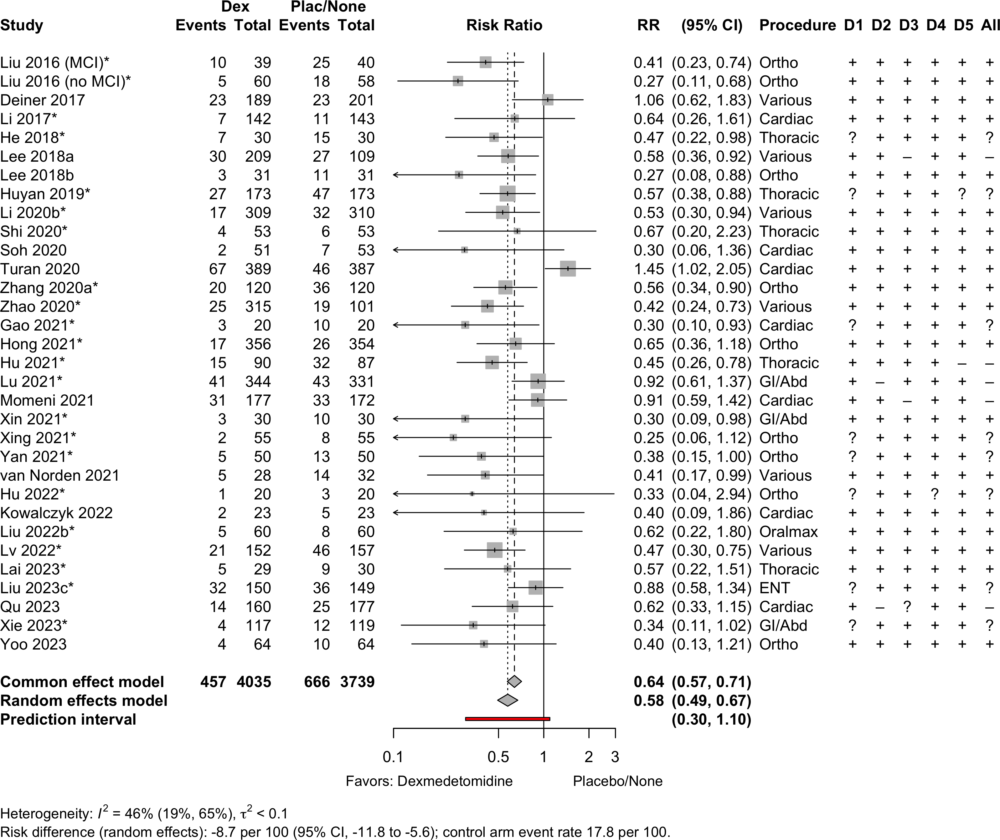
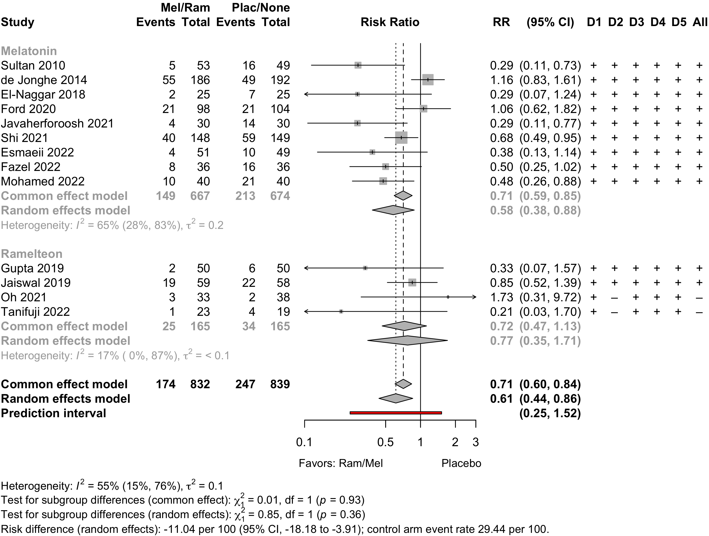
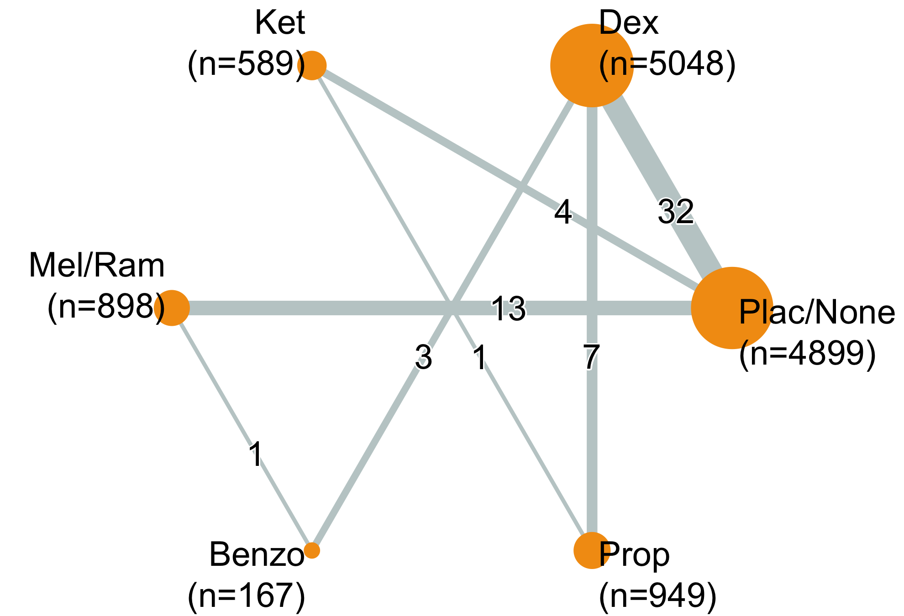
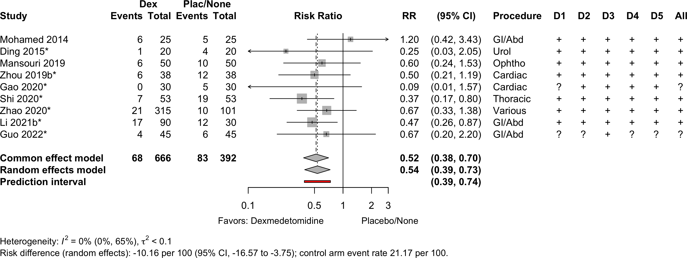
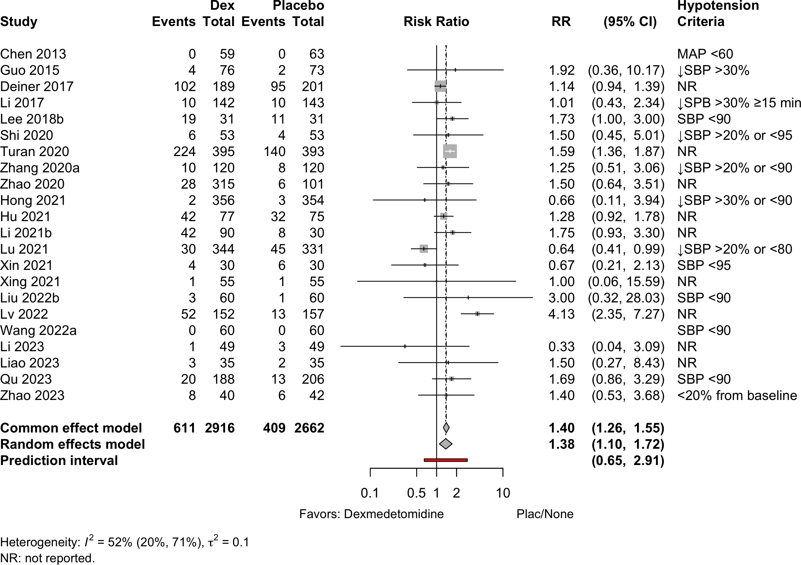
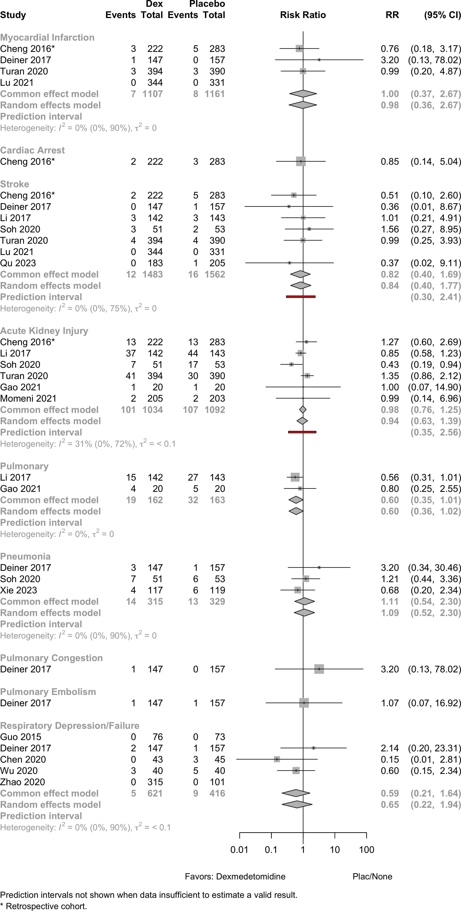
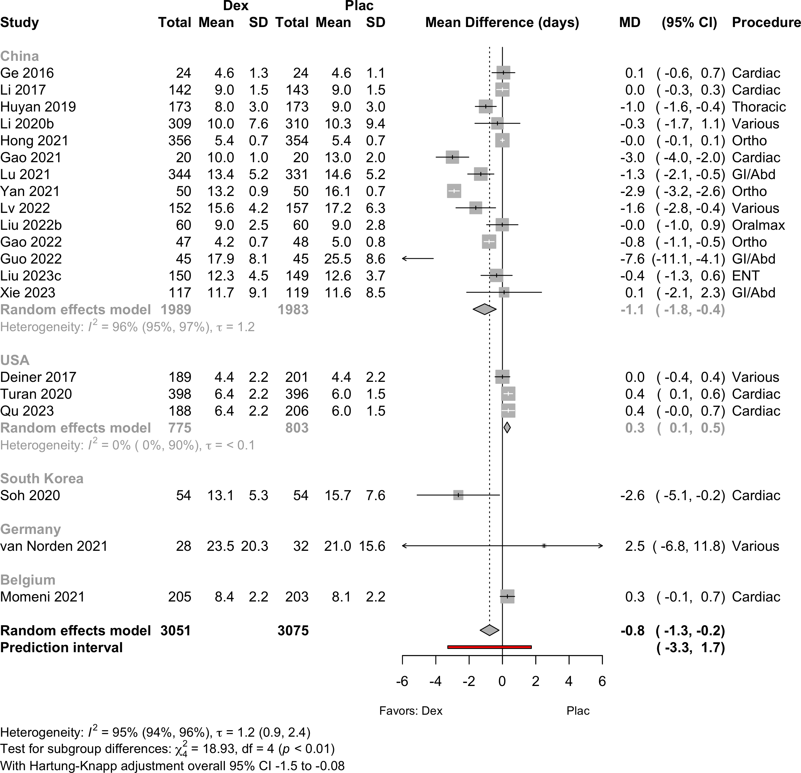
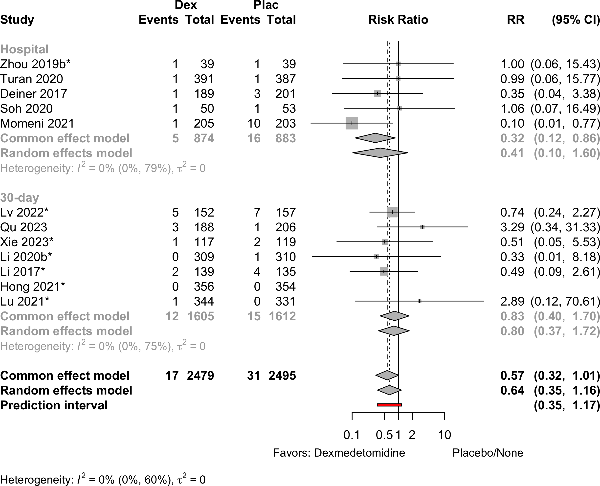
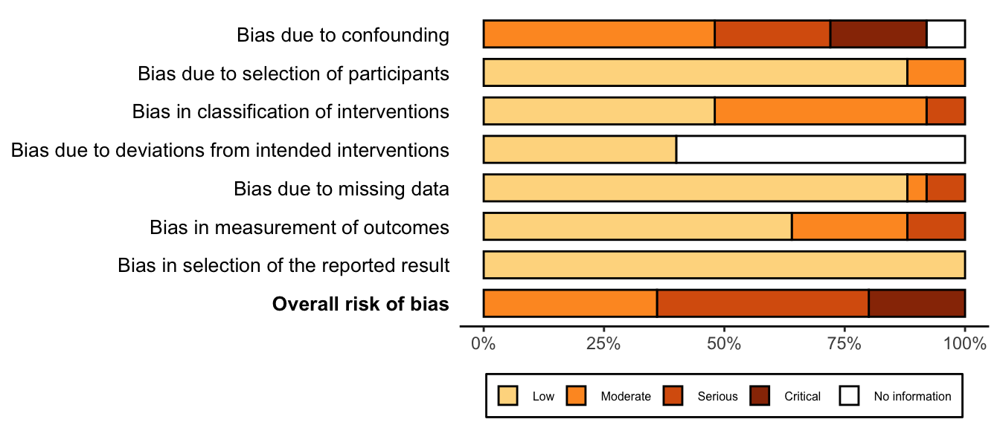

| Outcome | RCT | NRSI | Dexmedetomidine | Placebo | GRADE* | Effect | Estimate (95% CI) |
I 2 | Prediction Interval |
|---|---|---|---|---|---|---|---|---|---|
| N (Total) | N (Total) | ||||||||
| Delirium | 31 | 457 (4,035) | 666 (3,739) | RR | 0.58 (0.49–0.67) | 46% |
(0.30–1.10) | ||
| Neurocognitive disorder <30 days | 9 | 68 (666) | 83 (392) | RR | 0.54 (0.39–0.73) | 0% |
(0.39–0.74) | ||
| Neurocognitive disorder ≥30 days to 1 yr | 2 | 5 (50) | 22 (50) | RR | 0.24 (0.11–0.55) | 0% |
|||
| Physical function | 1 | (30) | (31) | SMD | 0.39 (-1.57 to 2.34) | ||||
| Bradycardia | 17 | 236 (2,031) | 129 (1,755) | RR | 1.52 (1.22–1.88) | 0% |
(0.97–2.37) | ||
| 18 | 236 (2,121) | 129 (1,842) | RD/100 | 2.0 (-0.4 to 4.4) | (-2.2–6.2) | ||||
| Hypotension | 20 | 611 (2,797) | 409 (2,539) | RR | 1.37 (1.11–1.69) | 47% |
(0.65–2.90) | ||
| 22 | 611 (2,916) | 409 (2,662) | RD/100 | 4.3 (0.5 to 8.0) | 77% |
(-10.5 to 19.0) | |||
| Complications | 27 | 3 | see below | ||||||
| Length of stay (days) | 20 | (3,051) | (3,075) | MD | -0.8 (-1.3 to -0.2) | (-3.3 to 1.7) | |||
| Mortality, in-hospital and 30-day | 12 | 19 (2,345) | 39 (2,424) | RR | 0.58 (0.34–1.00) | 0% |
(0.30–1.12) | ||
| 13 | 19 (2,701) | 39 (2,778) | RD/1000 | -6.7 (-5.2 to 2.9) | 17% |
(-4.9 to 2.6) | |||
| RCT: randomized clinical trial; NRSI: nonrandomized studies of interventions; GRADE: Grades of Recommendation, Assessment, Development, and Evaluation; RR: risk ratio; OR: odds ratio; MD: mean difference; SMD: standardized mean difference. | |||||||||
| * Very low: ⨁◯◯◯; Low: ⨁⨁◯◯; Moderate: ⨁⨁⨁◯; High: ⨁⨁⨁⨁. | |||||||||
Delirium Prophylaxis
Key Question
Among older patients undergoing surgery and anesthesia, does dexmedetomidine, ketamine, ramelteon, or melatonin administered during the perioperative period decrease the risk of postoperative delirium or other adverse cognitive outcomes?
Balance Tables
Dexmedetomidine
Outcomes Reported
Included Studies
| Dexmedetomidine | |
|---|---|
| Design | Studies |
| Randomized Clinical Trial | 71 |
| Nonrandomized Trial | 6 |
| Prospective Cohort | 1 |
| Retrospective Cohort | 6 |
| Total | 84 |
| Studies with multiple publications counted only once (applied to 1 trial with 2 publications). | |
| Ketamine | |
|---|---|
| Design | Studies |
| Randomized Clinical Trial | 12 |
| Prospective Cohort | 3 |
| Retrospective Cohort | 4 |
| Total | 19 |
| Melatonin or Ramelteon | |
|---|---|
| Design | Studies |
| Randomized Clinical Trial | 16 |
| Nonrandomized Trial | 2 |
| Before-After/Time Series | 2 |
| Retrospective Cohort | 1 |
| Total | 21 |
Design, centers, country, and surgery
| ID | Studya | Centers | Enrolled | Countryb | Surgery |
|---|---|---|---|---|---|
| Dexmedetomidine - Nonrandomized Trial | |||||
| 13361 | 1 | 110 | Chinab | GI/Abdominal | |
| 5183 | 1 | 96 | Chinab | GI/Abdominal | |
| 5052 | 1 | 140 | Chinab | GI/Abdominal | |
| 120 | 1 | 140 | Chinab | Ortho | |
| 13368 | 1 | 165 | Chinab | Spine | |
| 13301 | 1 | 87 | Chinab | Thoracic | |
| Dexmedetomidine - Prospective Cohort | |||||
| 18819 | 1 | 676 | Chinab | GI/Abdominal | |
| Dexmedetomidine - Randomized Clinical Trial | |||||
| 13579 | 1 | 70 | Egyptb | Cardiac | |
| 7240 | 1 | 70 | Canada | Cardiac | |
| 2288 | 1 | 185 | Canada | Cardiac | |
| 1819 | 1 | 60 | Chinab | Cardiac | |
| 5269 | 1 | 40 | Chinab | Cardiac | |
| 13777 | 1 | 50 | Chinab | Cardiac | |
| 17683 | 1 | 49 | Poland | Cardiac | |
| 24 | 2 | 285 | Chinab | Cardiac | |
| 2173 | 1 | 420 | Belgium | Cardiac | |
| 17019 | 1 | 469 | USA | Cardiac | |
| 18870 | 1 | 78 | Slovenia | Cardiac | |
| 20454 | 1 | 108 | South Korea | Cardiac | |
| 2624 | 1 | 140 | USA | Cardiac | |
| 16008 | 6 | 798 | USA | Cardiac | |
| 16023 | 1 | 80 | Chinab | Cardiac | |
| 13406 | 1 | 156 | Chinab | Cardiac | |
| 335 | 1 | 63 | Germany | Cardiac|GI/Abdominal | |
| 18597 | 1 | 304 | Chinab | ENT | |
| 5436 | 1 | 126 | Chinab | GI/Abdominal | |
| 889 | 1 | 88 | Chinab | GI/Abdominal | |
| 1288 | 1 | 87 | Chinab | GI/Abdominal | |
| 17531 | 1 | 90 | Chinab | GI/Abdominal | |
| 5024 | 1 | 100 | Chinab | GI/Abdominal | |
| 4914 | 1 | 120 | Chinab | GI/Abdominal | |
| 18582 | 1 | 104 | Chinab | GI/Abdominal | |
| 13941 | 1 | 58 | Egyptb | GI/Abdominal | |
| 12900 | 1 | 100 | Chinab | GI/Abdominal | |
| 18909 | 1 | 240 | Chinab | GI/Abdominal | |
| 1919 | 1 | 60 | Chinab | GI/Abdominal | |
| 8558 | 13 | 808 | Chinab | GI/Abdominal|Hepatic | |
| 5480 | 1 | 174 | Chinab | GI/Abdominal|Neuro|Urol | |
| 13483 | 1 | 198 | Chinab | GI/Abdominal|Ortho|Thoracic | |
| 261 | 1 | 354 | South Korea | GI/Abdominal|Urol | |
| 328 | 1 | 120 | Chinab | Headneck | |
| 1117 | 1 | 150 | Iranb | Ophtho | |
| 18690 | 1 | 90 | Egyptb | Ophtho | |
| 5452 | 1 | 184 | Chinab | Oralmax | |
| 16845 | 1 | 120 | Chinab | Oralmax | |
| 1625 | 1 | 44 | Chinab | Oralmax | |
| 18346 | 2 | 108 | Chinab | Ortho | |
| 17503 | 1 | 95 | Chinab | Ortho | |
| 5240 | 2 | 712 | Chinab | Ortho | |
| 17575 | 1 | 60 | Chinab | Ortho | |
| 2748 | 1 | 132 | South Korea | Ortho | |
| 742 | 1 | 164 | Chinab | Ortho | |
| 18575 | 1 | 98 | Chinab | Ortho | |
| 1419 | 1 | 200 | Chinab | Ortho | |
| 3130 | 1 | 152 | Chinab | Ortho | |
| 1735 | 1 | 336 | Chinab | Ortho | |
| 1267 | 1 | 415 | Chinab | Ortho | |
| 17001 | 1 | 748 | South Korea | Ortho | |
| 13075 | 1 | 110 | Chinab | Ortho | |
| 16303 | 1 | 100 | Chinab | Ortho | |
| 18937 | 1 | 128 | South Korea | Ortho | |
| 5147 | 1 | 240 | Chinab | Ortho | |
| 18958 | 1 | 88 | Chinab | Ortho | |
| 11129 | 1 | 187 | Chinab | Ortho | |
| 13568 | 1 | 90 | Chinab | Thoracic | |
| 3046 | 1 | 177 | Chinab | Thoracic | |
| 69 | 1 | 360 | Chinab | Thoracic | |
| 18558 | 1 | 90 | Chinab | Thoracic | |
| 16741 | 1 | 60 | Chinab | Thoracic | |
| 3391 | 1 | 106 | Chinab | Thoracic | |
| 13731 | 1 | 92 | Chinab | Thoracic | |
| 4798 | 1 | 40 | Chinab | Urol | |
| 7151 | 1 | 125 | Chinab | Urol | |
| 5251 | 1 | 87 | Indiab | Variousc | |
| 2022 | 10 | 429 | USA | Variousc | |
| 20465 | 1 | 620 | Chinab | Variousc | |
| 16718 | 1 | 327 | Chinab | Variousc | |
| 16734 | 1 | 100 | Chinab | Variousc | |
| 3716 | 1 | 432 | Chinab | Variousc | |
| Dexmedetomidine - Retrospective Cohort | |||||
| 2517 | 1 | 505 | USA | Cardiac | |
| 103 | 1 | 278 | USA | Cardiac | |
| 5066 | 1 | 714 | South Korea | Ortho | |
| 16830 | 1 | 60 | Chinab | Ortho | |
| 13367 | 1 | 120 | Chinab | Ortho | |
| 17150 | 1 | 195 | Chinab | Urol | |
| Ketamine - Prospective Cohort | |||||
| 1140 | 1 | 187 | Norway | Ortho | |
| 17147 | 4 | 98 | Singapore | Other | |
| 9616 | 1 | 98 | USA | Spine | |
| Ketamine - Randomized Clinical Trial | |||||
| 181 | 1 | 78 | USA | Cardiac | |
| 1847 | 1 | 58 | USA | Cardiac | |
| 5189 | 1 | 75 | Thailand | Cardiac | |
| 18435 | 1 | 84 | Chinab | GI/Abdominal | |
| 18610 | 1 | 68 | China | GI/Abdominal | |
| 15285 | 1 | 60 | Austria | GI/Abdominal|Hepatic | |
| 18690 | 1 | 90 | Egyptb | Ophtho | |
| 2217 | 1 | 80 | Mexicob | Ophtho | |
| 2578 | 1 | 56 | South Korea | Ortho | |
| 3788 | 1 | 160 | France | Ortho | |
| 13184 | 1 | 80 | Chinab | Ortho | |
| 2866 | 5 | 672 | USA | Variousc | |
| 1937 | 2 | 143 | Switzerland | Variousc | |
| Ketamine - Retrospective Cohort | |||||
| 17130 | 4,400 | 564,226 | USA | Orthod | |
| 17136 | 4,400 | 1,130,569 | USA | Orthoe | |
| 18978 | 527,254 | USA | Ortho | ||
| 17144 | 1 | 41,766 | USA | Orthof | |
| 17145 | 1 | 41,766 | USA | Ortho | |
| 17149 | 1 | 84 | USA | Thoracic | |
| Melatonin - Nonrandomized Trial | |||||
| 16537 | 1 | 500 | Slovakia | Cardiac | |
| 13824 | 1 | 500 | Slovakia | Cardiac | |
| Melatonin - Randomized Clinical Trial | |||||
| 17055 | 1 | 145 | Iranb | Cardiac | |
| 17057 | 1 | 50 | Egyptb | Cardiac | |
| 16558 | 2 | 210 | Australia | Cardiac | |
| 9256 | 1 | 60 | Iranb | Cardiac | |
| 9741 | 1 | 297 | Chinab | Cardiac | |
| 17152 | 1 | 150 | Iranb | General|Neuro|Ortho | |
| 602 | 1 | 148 | Chinab | Ortho | |
| 17153 | 1 | 80 | Iranb | Ortho | |
| 17154 | 1 | 80 | Egyptb | Ortho | |
| 5164 | 1 | 152 | Egyptb | Ortho | |
| 16552 | 3 | 452 | Netherlands | Ortho | |
| Ramelteon - Before-After/Time Series | |||||
| 693 | 1 | 309 | Japan | Hepatic | |
| 2997 | 1 | 82 | Japan | Thoracic | |
| Ramelteon - Randomized Clinical Trial | |||||
| 17084 | 1 | 112 | Japan | GI/Abdominal|Hepatic | |
| 18530 | 1 | 108 | Japan | General|Thoracic|Urol|Vasc | |
| 3841 | 1 | 80 | USA | Ortho | |
| 4150 | 1 | 120 | USA | Thoracic | |
| 13512 | 1 | 100 | Indiab | Variousc | |
| Ramelteon - Retrospective Cohort | |||||
| 20438 | 1 | 69 | Japan | Headneck | |
| GI: gastrointestinal; Ortho: orthopedic; Neuro: neurological; Oralmax: oral maxillofacial; Vasc: vascular; ENT: ear nose and throat. | |||||
| a Studies examining drugs not directly relevant to recommendations but potentially to the evidence space (eg, a connected network including indirect evidence) are included here. | |||||
| b Non very-high Human Development Index country. | |||||
| c Described as various or more than 4 different types of surgery. | |||||
| d Hip arthroplasty. | |||||
| e Knee arthroplasty. | |||||
| f Intraoperative ketamine. | |||||
Country Summary
| N = 98a | |
|---|---|
| Country | |
| China | 56 (57%) |
| USA | 8 (8.2%) |
| Egypt | 6 (6.1%) |
| South Korea | 6 (6.1%) |
| Iran | 5 (5.1%) |
| Canada | 2 (2.0%) |
| India | 2 (2.0%) |
| Japan | 2 (2.0%) |
| Australia | 1 (1.0%) |
| Austria | 1 (1.0%) |
| Belgium | 1 (1.0%) |
| France | 1 (1.0%) |
| Germany | 1 (1.0%) |
| Mexico | 1 (1.0%) |
| Netherlands | 1 (1.0%) |
| Poland | 1 (1.0%) |
| Slovenia | 1 (1.0%) |
| Switzerland | 1 (1.0%) |
| Thailand | 1 (1.0%) |
| a n (%) | |
Interventions & Comparators
Dexmedetomidine
| Study | N | Arm | ASA | Anesthetic | Ageb | MMSEc,b | Dexmedetomidine mcg/kg | Timinge | |||||
|---|---|---|---|---|---|---|---|---|---|---|---|---|---|
| PSa | Vol | TIVA | Reg | Sed | Load | Maint/hrd | Postop | ||||||
| Cardiac - Randomized Clinical Trial | |||||||||||||
| 92 | Prop | NR | ✓ | 72.4 (6.2) |
|||||||||
| 91 | Dex | ✓ | ✓ | ✓ | ✓ | 72.7 (6.4) |
0.4 | (0.2–0.7) | ▁▁▁▆ |
||||
| 24 | Plac | 123 | ✓ | 72.0 (4.0) |
26.9 (0.8) |
||||||||
| 24 | Dex | ✓ | ✓ | ✓ | ✓ | 70.0 (3.0) |
27.2 (0.9) |
0.3 | 0.3 | ▁▆▆▁ |
|||
| 143 | Plac | 234 | ✓ | ✓ | 67.5 (5.3) |
29 [28-30] |
|||||||
| 142 | Dex | ✓ | ✓ | ✓ | ✓ | 66.4 (5.4) |
29 [28-30] |
0.6 | 0.4 | 0.1 | ▁▁▆▆ |
||
| 30 | Mid | NR | ✓ | 66.7 (5.6) |
|||||||||
| 30 | Dex | ✓ | ✓ | ✓ | ✓ | 65.3 (4.8) |
(0.4–0.7) | ▁▁▁▆ |
|||||
| 61 | Prop | NR | 70.0 {64-79} |
||||||||||
| 59 | Dex | ✓ | ✓ | ✓ | ✓ | 66.5 {63-74} |
0.5 | (0.1–0.4) | ▁▁▁▆ |
||||
| 38 | Plac | 123 | ✓ | ✓ | 70.0 (4.9) |
||||||||
| 39 | Ulin | ✓ | ✓ | ✓ | ✓ | 70.6 (4.4) |
|||||||
| 39 | Dex/Ulin | ✓ | ✓ | ✓ | ✓ | 69.6 (5.0) |
0.4 | ▁▁▆▁ |
|||||
| 38 | Dex | ✓ | ✓ | ✓ | ✓ | 69.8 (5.1) |
0.4 | ▁▁▆▁ |
|||||
| 30 | Plac | 23 | ✓ | 70.4 (4.2) |
|||||||||
| 30 | Dex | ✓ | ✓ | ✓ | ✓ | 69.5 (5.1) |
1.0 | (0.3–0.5) | ▁▆▆▁ |
||||
| 54 | Plac | NR | ✓ | ✓ | 65.0 [37-83] |
||||||||
| 54 | Dex | ✓ | ✓ | ✓ | ✓ | 65.0 [23-82] |
▁▁▆▁ |
||||||
| 396 | Plac | 1234 | ✓ | ✓ | 62.0 (12.0) |
||||||||
| 398 | Dex | ✓ | ✓ | ✓ | ✓ | 63.0 (11.0) |
0.1 | 0.4 | ▁▆▆▆ |
||||
| 40 | Plac | 23 | ✓ | 67.7 (8.8) |
28.2 |
||||||||
| 40 | Dex | ✓ | ✓ | ✓ | ✓ | 68.2 (8.6) |
28.1 |
0.5 | 0.6 | ▁▆▆▁ |
|||
| 20 | Plac | 23 | ✓ | 71.4 (4.5) |
28.4 (1.3) |
||||||||
| 20 | Dex | ✓ | ✓ | ✓ | ✓ | 71.4 (4.5) |
28.5 (1.4) |
0.6 | 0.2 | ▁▆▆▁ |
|||
| 203 | Plac | NR | ✓ | 70.0 {59-81} |
28 {26-29} |
||||||||
| 205 | Dex | ✓ | ✓ | ✓ | ✓ | 71.0 {61-81} |
28 {26-29} |
0.4 | ▁▁▁▆ |
||||
| 33 | Prop | NR | ✓ | 78.8 |
30.2 |
||||||||
| 34 | Dex | ✓ | ✓ | ✓ | ✓ | 78.7 |
30.1 |
0.5 (0–1.5) | ▁▁▁▆ |
||||
| 23 | None | 23 | ✓ | 66.0 (5.0) |
|||||||||
| 23 | Dex | ✓ | ✓ | ✓ | ✓ | 67.0 (10.0) |
0.5 | 0.25 | ▁▆▆▁ |
||||
| 206 | Plac | NR | 70.0 {65-75} |
||||||||||
| 188 | Dex | ✓ | ✓ | ✓ | ✓ | 67.5 {63-73} |
1 | ▁▁▁▆ |
|||||
| 34 | Prop | NR | ✓ | 83.5 {79-87} |
26 {25-28} |
||||||||
| 37 | Dex | ✓ | ✓ | ✓ | ✓ | 83.0 {77-85} |
27 {25-28} |
0.5 | (0.2–1) | ▁▆▆▁ |
|||
| Ortho - Randomized Clinical Trial | |||||||||||||
| 40 | Plac | 23 | ✓ | 75.2 (7.8) |
22.4 (2.6) |
||||||||
| 39 | Dex | ✓ | ✓ | ✓ | ✓ | 72.8 (8.2) |
23.3 (2.7) |
(0.2–0.4) | ▁▁▆▁ |
||||
| 58 | Plac | 23 | ✓ | 72.8 (9.2) |
25.4 (2.4) |
||||||||
| 60 | Dex | ✓ | ✓ | ✓ | ✓ | 71.2 (8.1) |
26.2 (3.5) |
(0.2–0.4) | ▁▁▆▁ |
||||
| 76 | Dex | 23 | ✓ | ✓ | 65.0 (5.8) |
28.3 (1.3) |
0.5 | 0.5 | ▁▆▆▁ |
||||
| 75 | Dex | ✓ | ✓ | ✓ | ✓ | 65.5 (5.3) |
28.5 (1.2) |
0.5 | 0.5 | 0.06 | ▁▆▆▆ |
||
| 31 | Plac | 12 | ✓ | 67.2 (5.0) |
|||||||||
| 33 | Preg | ✓ | ✓ | ✓ | ✓ | 68.4 (5.1) |
|||||||
| 29 | Dex/Preg | ✓ | ✓ | ✓ | ✓ | 65.4 (9.7) |
0.5 | 0.5 | |||||
| 31 | Dex | ✓ | ✓ | ✓ | ✓ | 68.8 (5.9) |
0.5 | 0.5 | ▁▆▆▁ |
||||
| 148 | Prop | 23 | ✓ | 74.0 (6.0) |
25.7 (1.7) |
||||||||
| 148 | Dex | ✓ | ✓ | ✓ | ✓ | 76.0 (7.0) |
26.2 (2.1) |
0.9 | (0.1–0.5) | ▁▆▁▁ |
|||
| 55 | Prop | 123 | ✓ | 68.2 (6.4) |
|||||||||
| 54 | Mid | ✓ | ✓ | ✓ | ✓ | 66.9 (6.6) |
|||||||
| 55 | Dex | ✓ | ✓ | ✓ | ✓ | 69.3 (7.1) |
▁▁▆▁ |
||||||
| 183 | Prop | NR | ✓ | 73.0 (11.0) |
27.1 (1.4) |
||||||||
| 183 | Dex | ✓ | ✓ | ✓ | ✓ | 72.0 (9.0) |
26.6 (2.9) |
0.9 | (0.1–0.5) | ▁▁▆▁ |
|||
| 120 | Plac | 123 | ✓ | 79.0 (6.8) |
|||||||||
| 120 | Dex | ✓ | ✓ | ✓ | ✓ | 78.1 (6.4) |
0.5 | 0.3 | ▆▁▆▁ |
||||
| 354 | Plac | 1234 | ✓ | ✓ | 71.0 (5.0) |
26.1 (3.0) |
|||||||
| 356 | Dex | ✓ | ✓ | ✓ | ✓ | 71.0 (5.0) |
26.1 (2.9) |
0.03 | ▁▁▁▆ |
||||
| 55 | Plac | 23 | ✓ | 69.2 (3.8) |
|||||||||
| 55 | Dex | ✓ | ✓ | ✓ | ✓ | 68.3 (3.9) |
0.5 | ▁▆▁▁ |
|||||
| 50 | Plac | 12 | ✓ | 72.7 (4.3) |
29.2 (0.3) |
||||||||
| 50 | Dex | ✓ | ✓ | ✓ | ✓ | 73.2 (5.8) |
29.5 (0.2) |
0.3 | ▁▆▁▁ |
||||
| 92 | Plac | 123 | ✓ | 75.2 (6.1) |
28.6 (0.9) |
||||||||
| 95 | Dex | ✓ | ✓ | ✓ | ✓ | 74.1 (4.4) |
28.9 (0.8) |
1.0 | 0.5 | ▆▁▆▁ |
|||
| 48 | Plac | 123 | ✓ | 67.2 (5.2) |
|||||||||
| 47 | Dex | ✓ | ✓ | ✓ | ✓ | 68.2 (6.0) |
1.0 | 0.4 | 2 | ▁▆▆▆ |
|||
| 20 | None | NR | ✓ | 68.9 (4.3) |
|||||||||
| 20 | Dex | ✓ | ✓ | ✓ | ✓ | 69.2 (5.0) |
0.4 | ▁▆▆▁ |
|||||
| 52 | Dex | 23 | ✓ | 70.8 (4.4) |
|||||||||
| 53 | Dex | ✓ | ✓ | ✓ | ✓ | 71.8 (5.5) |
(0.2–0.7) | ▁▁▆▁ |
|||||
| 49 | None | NR | ✓ | 68.5 (2.2) |
|||||||||
| 49 | Dex | ✓ | ✓ | ✓ | ✓ | 67.7 (2.8) |
4 | 0.2 | ▁▆▆▁ |
||||
| 366 | Prop | 12 | ✓ | 71.0 {67-75} |
|||||||||
| 366 | Dex | ✓ | ✓ | ✓ | ✓ | 72.0 {68-76} |
1.0 | (0.1–0.5) | ▁▁▆▁ |
||||
| 64 | Plac | 123 | ✓ | 74.2 (6.2) |
|||||||||
| 64 | Dex | ✓ | ✓ | ✓ | ✓ | 74.4 (6.0) |
1.0 | 0.2 | ▁▁▆▁ |
||||
| 42 | Plac | NR | ✓ | 69.7 (7.2) |
25.8 (0.6) |
||||||||
| 40 | Dex | ✓ | ✓ | ✓ | ✓ | 70.9 (7.2) |
25.9 (0.4) |
200 | ▁▁▁▆ |
||||
| GI/Abd - Randomized Clinical Trial | |||||||||||||
| 63 | Plac | NR | ✓ | 67.9 (6.6) |
28.5 (1.1) |
||||||||
| 59 | Dex | ✓ | ✓ | ✓ | ✓ | 66.2 (7.5) |
28.2 (0.8) |
1.0 | 0.4 | ▁▆▆▁ |
|||
| 25 | Plac | 123 | ✓ | ✓ | 67.8 (5.4) |
||||||||
| 25 | Dex | ✓ | ✓ | ✓ | ✓ | 63.9 (5.0) |
0.17 | 0.4 | ▆▆▆▁ |
||||
| 50 | Plac | 123 | ✓ | 70.0 (6.0) |
28.3 (1.4) |
||||||||
| 50 | Dex | ✓ | ✓ | ✓ | ✓ | 69.0 (5.0) |
28.4 (1.3) |
1.0 | 0.4 | ▁▆▆▁ |
|||
| 20 | Plac | 12 | ✓ | 68.7 (13.5) |
26.8 (1.5) |
||||||||
| 20 | Dex | ✓ | ✓ | ✓ | ✓ | 69.3 (12.5) |
26.5 (1.7) |
0.6 | ▁▁▆▁ |
||||
| 45 | Plac | 12 | ✓ | 65.4 (11.7) |
29.3 (0.4) |
||||||||
| 43 | Dex | ✓ | ✓ | ✓ | ✓ | 64.9 (11.4) |
29.4 (0.5) |
0.3 | 1 | ▁▁▆▁ |
|||
| 30 | Plac | 123 | ✓ | 73.4 (5.1) |
28.7 (2.1) |
||||||||
| 30 | Dex | ✓ | ✓ | ✓ | ✓ | 74.7 (2.6) |
27.6 (3.2) |
0.3 | 0.2 | ▆▁▆▁ |
|||
| 30 | Dex | ✓ | ✓ | ✓ | ✓ | 71.2 (3.5) |
28.0 (1.7) |
0.3 | 0.5 | ▆▁▆▁ |
|||
| 30 | Dex | ✓ | ✓ | ✓ | ✓ | 69.8 (4.3) |
28.4 (2.6) |
0.3 | 0.8 | ▆▁▆▁ |
|||
| 331 | Plac | 123 | ✓ | 70.4 (6.5) |
|||||||||
| 344 | Dex | ✓ | ✓ | ✓ | ✓ | 70.1 (5.8) |
0.5 | 0.2 | ▁▆▆▁ |
||||
| 50 | Plac | 12 | ✓ | ✓ | 70.7 (6.5) |
||||||||
| 50 | Dex | ✓ | ✓ | ✓ | ✓ | 69.7 (6.6) |
0.5 | 0.4 | ▁▆▆▁ |
||||
| 30 | Plac | 23 | ✓ | 68.0 [66-71] |
|||||||||
| 30 | Dex | ✓ | ✓ | ✓ | ✓ | 69.0 [67-70] |
0.5 | 0.4 | ▆▁▆▁ |
||||
| 45 | None | 23 | ✓ | 68.5 (3.8) |
|||||||||
| 45 | Dex | ✓ | ✓ | ✓ | ✓ | 68.5 (3.8) |
1.0 | 0.5 | ▁▆▆▁ |
||||
| 35 | Plac | NR | ✓ | 69.7 (2.5) |
27.7 (1.9) |
||||||||
| 34 | Rem | ✓ | ✓ | ✓ | ✓ | 70.1 (3.6) |
27.7 (1.7) |
||||||
| 35 | Dex | ✓ | ✓ | ✓ | ✓ | 71.3 (3.6) |
27.8 (2.1) |
0.5 | (0.3–0.5) | ▁▆▆▁ |
|||
| 119 | Plac | NR | ✓ | 68.6 (5.5) |
|||||||||
| 117 | Dex | ✓ | ✓ | ✓ | ✓ | 67.9 (5.6) |
3 | ▁▁▁▆ |
|||||
| Various - Randomized Clinical Trial | |||||||||||||
| 201 | Plac | 1234 | ✓ | ✓ | 74.0 {71-78} |
||||||||
| 189 | Dex | ✓ | ✓ | ✓ | ✓ | 74.0 {71-78} |
0.5 | ▁▁▆▆ |
|||||
| 109 | Plac | 123 | ✓ | 73.1 (6.1) |
|||||||||
| 95 | Dex | ✓ | ✓ | ✓ | ✓ | 72.2 (5.4) |
1.0 | (0.2–0.7) | ▁▆▆▁ |
||||
| 114 | Dex | ✓ | ✓ | ✓ | ✓ | 73.1 (6.4) |
1.0 | ▁▁▆▁ |
|||||
| 100 | Mid | 123 | ✓ | 69.4 (4.5) |
25.0 (3.3) |
||||||||
| 98 | Dex | ✓ | ✓ | ✓ | ✓ | 70.5 (5.0) |
24.9 (3.9) |
0.5 | ▆▁▁▁ |
||||
| 40 | Prop | 123 | ✓ | 64.7 (5.9) |
26.4 (1.3) |
||||||||
| 40 | Dex | ✓ | ✓ | ✓ | ✓ | 66.2 (6.6) |
26.1 (1.2) |
(0.5–0.7) | ▁▁▆▁ |
||||
| 310 | Plac | 123 | ✓ | ✓ | 69.0 (6.4) |
27.4 (2.7) |
|||||||
| 309 | Dex | ✓ | ✓ | ✓ | ✓ | 69.0 (6.6) |
27.4 (2.6) |
0.6 | 0.5 | ▁▁▆▁ |
|||
| 101 | None | 23 | ✓ | 69.2 (4.1) |
27 {24-30} |
||||||||
| 108 | Dex | ✓ | ✓ | ✓ | ✓ | 70.0 (4.5) |
27 {24-30} |
1.0 | 100f | ▁▆▆▁ |
|||
| 105 | Dex | ✓ | ✓ | ✓ | ✓ | 69.4 (3.9) |
27 {24-30} |
1.0 | 200f | ▁▆▆▁ |
|||
| 102 | Dex | ✓ | ✓ | ✓ | ✓ | 69.3 (4.1) |
27 {24-30} |
1.0 | 400f | ▁▆▆▁ |
|||
| 87 | Plac | 23 | ✓ | 71.4 (4.9) |
25.8 (0.8) |
||||||||
| 87 | Dex | ✓ | ✓ | ✓ | ✓ | 70.6 (4.2) |
26.1 (0.7) |
1.0 | 0.4 | ▁▆▆▁ |
|||
| 32 | Plac | 1234 | ✓ | ✓ | 70.5 (6.2) |
||||||||
| 28 | Dex | ✓ | ✓ | ✓ | ✓ | 70.4 (7.1) |
0.7 | ▁▁▆▁ |
|||||
| 157 | Plac | NR | ✓ | 68.4 (6.6) |
|||||||||
| 152 | Dex | ✓ | ✓ | ✓ | ✓ | 67.9 (5.9) |
▁▁▁▆ |
||||||
| 40 | None | 123 | ✓ | 71.0 (7.1) |
27 {23-30} |
||||||||
| 42 | Dex | ✓ | ✓ | ✓ | ✓ | 69.4 (6.8) |
27 {23-30} |
0.6 | ▁▆▆▁ |
||||
| Thoracic - Randomized Clinical Trial | |||||||||||||
| 46 | Mid | 12 | ✓ | 69.1 (4.9) |
29.8 (0.7) |
||||||||
| 46 | Dex | ✓ | ✓ | ✓ | ✓ | 68.7 (4.3) |
29.8 (0.7) |
0.2 | 0.5 (0.2–0.7) | ▁▆▆▁ |
|||
| 30 | Plac | 123 | ✓ | ✓ | 83.2 (5.1) |
||||||||
| 30 | Mid | ✓ | ✓ | ✓ | ✓ | 81.9 (6.2) |
|||||||
| 30 | Dex | ✓ | ✓ | ✓ | ✓ | 82.5 (5.4) |
0.5 | 0.4 | ▆▆▆▁ |
||||
| 173 | Plac | 23 | ✓ | 71.0 (6.0) |
|||||||||
| 173 | Dex | ✓ | ✓ | ✓ | ✓ | 70.0 (5.0) |
0.5 | 0.1 | ▆▁▆▁ |
||||
| 53 | Plac | 23 | ✓ | ✓ | 68.7 (3.4) |
28.0 (0.9) |
|||||||
| 53 | Dex | ✓ | ✓ | ✓ | ✓ | 68.7 (4.6) |
27.9 (0.9) |
0.5 | ▁▆▆▁ |
||||
| 87 | Plac | 123 | ✓ | 69.1 (5.1) |
|||||||||
| 90 | Dex | ✓ | ✓ | ✓ | ✓ | 69.6 (4.5) |
0.4 | 0.1 | ▁▆▆▁ |
||||
| 31 | Plac | 12 | ✓ | 68.5 (2.3) |
|||||||||
| 29 | Dex | ✓ | ✓ | ✓ | ✓ | 68.1 (2.6) |
1.0 | ▁▆▁▁ |
|||||
| 30 | None | 23 | ✓ | 71.2 (5.1) |
|||||||||
| 29 | Dex | ✓ | ✓ | ✓ | ✓ | 70.6 (5.3) |
1.0 | 0.5 | ▁▆▆▁ |
||||
| Oralmax - Randomized Clinical Trial | |||||||||||||
| 73 | Plac | 123 | ✓ | 71.3 (5.1) |
28.0 (1.6) |
||||||||
| 76 | Dex | ✓ | ✓ | ✓ | ✓ | 70.7 (5.2) |
28.2 (1.6) |
0.2 | ▁▁▁▆ |
||||
| 20 | Mid | NR | ✓ | 60.5 (8.2) |
|||||||||
| 20 | Dex | ✓ | ✓ | ✓ | ✓ | 60.0 (10.1) |
1.0 | (0.2–0.7) | ▁▁▁▆ |
||||
| 60 | Plac | 12 | ✓ | 72.1 (5.9) |
|||||||||
| 60 | Dex | ✓ | ✓ | ✓ | ✓ | 71.3 (6.7) |
0.5 | 0.4 | ▁▆▆▁ |
||||
| Urol - Randomized Clinical Trial | |||||||||||||
| 20 | Plac | NR | ✓ | ||||||||||
| 20 | Dex | ✓ | ✓ | ✓ | ✓ | 2 | ▁▆▁▁ |
||||||
| 60 | Plac | 12 | ✓ | 66.7 (4.1) |
25.4 (2.2) |
||||||||
| 60 | Dex | ✓ | ✓ | ✓ | ✓ | 65.6 (3.4) |
25.5 (2.5) |
0.4 | ▁▆▁▁ |
||||
| Headneck - Randomized Clinical Trial | |||||||||||||
| 30 | Mid/Prop | NR | ✓ | 69.9 (2.8) |
28.5 (1.2) |
||||||||
| 30 | Mid/Sevo | ✓ | ✓ | ✓ | ✓ | 70.1 (3.2) |
28.6 (1.2) |
||||||
| 30 | Dex | ✓ | ✓ | ✓ | ✓ | 68.8 (3.0) |
29.0 (0.9) |
1.0 | 0.5 | ▁▆▆▁ |
|||
| 30 | Dex | ✓ | ✓ | ✓ | ✓ | 69.3 (3.1) |
28.8 (1.1) |
1.0 | 0.5 | ▁▆▆▁ |
|||
| ENT - Randomized Clinical Trial | |||||||||||||
| 149 | Plac | NR | ✓ | ✓ | 70.1 (4.2) |
23.9 (4.9) |
|||||||
| 150 | Dex | ✓ | ✓ | ✓ | ✓ | 70.4 (5.0) |
24.3 (4.8) |
0.5 | 0.2 | ▁▁▆▁ |
|||
| Ortho - Nonrandomized Trial | |||||||||||||
| 70 | Plac | NR | ✓ | 69.7 (5.3) |
27.3 (0.7) |
||||||||
| 70 | Dex | ✓ | ✓ | ✓ | ✓ | 68.2 (5.6) |
27.6 (0.5) |
0.5 | 0.4 | ▁▆▆▁ |
|||
| Spine - Nonrandomized Trial | |||||||||||||
| 46 | Plac | 123 | ✓ | 70.6 (6.1) |
25.6 (4.8) |
||||||||
| 57 | Dex | ✓ | ✓ | ✓ | ✓ | 71.4 (6.7) |
24.1 (4.6) |
0.5 | ▁▆▆▁ |
||||
| 62 | Dex | ✓ | ✓ | ✓ | ✓ | 72.5 (7.2) |
25.8 (4.5) |
1 | ▁▆▆▁ |
||||
| Ophtho - Randomized Clinical Trial | |||||||||||||
| 50 | Plac | 12 | ✓ | 64.0 (7.2) |
|||||||||
| 50 | Mid | ✓ | ✓ | ✓ | ✓ | 63.6 (8.3) |
|||||||
| 50 | Dex | ✓ | ✓ | ✓ | ✓ | 66.5 (1.6) |
1 | ▁▁▆▁ |
|||||
| 30 | Plac | 23 | ✓ | 70.6 (5.6) |
|||||||||
| 30 | Ket | ✓ | ✓ | ✓ | ✓ | 72.8 (5.3) |
▁▆▆▁ |
||||||
| 30 | Dex | ✓ | ✓ | ✓ | ✓ | 73.3 (5.1) |
0.5 | ▁▆▆▁ |
|||||
| GI/Abd - Nonrandomized Trial | |||||||||||||
| 48 | Plac | 12 | ✓ | 72.1 (32.2) |
|||||||||
| 48 | Dex | ✓ | ✓ | ✓ | ✓ | 71.9 (31.4) |
0.5 | ▁▁▆▁ |
|||||
| 60 | Plac | NR | ✓ | 74.1 (13.9) |
28.9 (1.2) |
||||||||
| 80 | Dex | ✓ | ✓ | ✓ | ✓ | 73.8 (14.5) |
28.9 (1.2) |
1.0 | (0.2–0.7) | ▁▁▆▁ |
|||
| 50 | Plac | NR | ✓ | ✓ | 68.3 (2.1) |
28.5 (4.2) |
|||||||
| 60 | Dex | ✓ | ✓ | ✓ | ✓ | 68.4 (3.3) |
28.5 (4.3) |
0.5 | 0.4 | ▆▁▁▁ |
|||
| Thoracic - Nonrandomized Trial | |||||||||||||
| 46 | None | NR | ✓ | 67.3 (2.1) |
28.5 (4.2) |
||||||||
| 41 | Dex | ✓ | ✓ | ✓ | ✓ | 67.4 (3.3) |
28.5 (4.3) |
0.5 | 0.1 | ▁▁▆▁ |
|||
| GI/Abd - Prospective Cohort | |||||||||||||
| 289 | None | 123 | 69.3 (5.1) |
||||||||||
| 354 | Dex | ✓ | ✓ | ✓ | ✓ | 69.3 (5.1) |
Unspecified |
||||||
| Cardiac - Retrospective Cohort | |||||||||||||
| 283 | Plac | NR | ✓ | 73.5 (6.2) |
|||||||||
| 222 | Dex | ✓ | ✓ | ✓ | ✓ | 73.6 (6.1) |
(0.24–0.6) | ▁▁▆▆ |
|||||
| 209 | Prop | NR | ✓ | 62.0 (13.0) |
|||||||||
| 69 | Dex | ✓ | ✓ | ✓ | ✓ | 63.0 (13.0) |
0.19 (0.08–0.31) | ▁▁▆▁ |
|||||
| Ortho - Retrospective Cohort | |||||||||||||
| 58 | Plac | 12 | ✓ | 72.1 (0.2) |
28.7 (1.1) |
||||||||
| 62 | Dex | ✓ | ✓ | ✓ | ✓ | 72.2 (0.3) |
28.6 (1.3) |
0.5 | 0.4 | ▆▁▆▁ |
|||
| 357 | Prop | 123 | ✓ | 74.0 {70-78} |
|||||||||
| 357 | Dex | ✓ | ✓ | ✓ | ✓ | 74.0 {70-79} |
1.0 | (0.1–0.5) | ▁▆▆▁ |
||||
| 30 | None | NR | ✓ | 67.9 (5.0) |
18.0 (1.5) |
||||||||
| 30 | Dex | ✓ | ✓ | ✓ | ✓ | 67.3 (5.5) |
18.3 (2.0) |
0.5 | 0.4 | ▁▆▆▁ |
|||
| Urol - Retrospective Cohort | |||||||||||||
| 35 | None | 1234 | 68.0 [66-72] |
||||||||||
| 160 | Dex | ✓ | ✓ | ✓ | ✓ | 68.0 [66-72] |
▁▁▆▁ |
||||||
| GI: gastrointestinal; Abd: abdominal (includes hepatic); Ortho: orthopedic; Various: more that one procedure category; Oralmax: oral and maxillofacial; Ophtho; ophthalmologic; Urol: urologic; Dex: dexmedetomidine; Ulin: ulinastatin; Mid: midazolam; Mid/Prop: midazolam/propofol; Mid/Seve: midazolam/sevoflurane; Preg: pregabalin; Prop: propofol; Plac; placebo; PS: physical status; Vol: volatile; TIVA: total intravenous anesthesia; Reg: regional; Sed: sedation; MMSE: Mini-Mental State Exam. | |||||||||||||
| a ASA Physical Status of patients included (proportions can be found here[link to table add]). | |||||||||||||
| b Mean Med (SD)[Range]{IQR}. | |||||||||||||
| c No studies reported including cognitively impaired patients except Liu 2016 as indicated. | |||||||||||||
| d Maintenance range if reported in parentheses. | |||||||||||||
| e Bars indicate adminstration times from left to right: preoperative, induction, intraoperative, and postoperative (includes PACU). | |||||||||||||
| f Given as a single dose. | |||||||||||||
Ketamine
| Study | N | Arm | ASA | Anesthetic | Ageb | MMSEb,c | Dose | Maintenance | Timingd | ||
|---|---|---|---|---|---|---|---|---|---|---|---|
| PSa | Vol | TIVA | Reg | (mg/kg) | (mg/kg) | ||||||
| Cardiac - Randomized Clinical Trial | |||||||||||
| 26 | None | NR | ✓ | 64.0 (7.0) |
|||||||
| 26 | Plac | 67.0 (8.0) |
|||||||||
| 26 | Ket | 68.0 (7.0) |
0.5 | ▁▆▁▁ |
|||||||
| 29 | Plac | 34 | ✓ | 60.8 (8.0) |
|||||||
| 29 | Ket | 68.0 (8.0) |
0.5 | ▁▆▁▁ |
|||||||
| 32 | Prop | NR | ✓ | ||||||||
| 32 | Ket | 1 | ▁▆▆▁ |
||||||||
| Ortho - Randomized Clinical Trial | |||||||||||
| 75 | Plac | NR | ✓ | 65.0 (14.0) |
|||||||
| 79 | Ket | 64.0 (13.0) |
0.5 | ▁▁▆▆ |
|||||||
| 26 | Plac | 123 | ✓ | 68.4 (6.5) |
26 {24-28} |
||||||
| 25 | Ket | 68.3 (5.3) |
25 {24-28} |
0.5 | ▁▆▁▁ |
||||||
| 40 | Suf | 123 | ✓ | 65.3 (5.2) |
|||||||
| 40 | Kete | 66.0 (5.3) |
0.5 | ▁▆▁▁ |
|||||||
| GI/Abd - Randomized Clinical Trial | |||||||||||
| 19 | Plac | 123 | ✓ | ✓ | 61.0 (12.4) |
||||||
| 19 | Kete | 58.4 (8.1) |
0.01 | ▁▁▆▆ |
|||||||
| 18 | Kete | 62.2 (9.8) |
0.25 | 0.12 | ▁▁▆▆ |
||||||
| 34 | Plac | NR | ✓ | 70.0 (6.2) |
27.9 (1.6) |
||||||
| 33 | Ket | 70.6 (7.6) |
28.6 (1.1) |
0.15 | ▁▆▁▁ |
||||||
| 31 | Plac | 23 | ✓ | 70.5 (4.2) |
|||||||
| 31 | Ket | 69.5 (4.3) |
0.25 | 0.12 | ▁▆▆▁ |
||||||
| Various - Randomized Clinical Trial | |||||||||||
| 222 | Plac | NR | 70.0 (6.9) |
||||||||
| 227 | Ket | 70.0 (7.2) |
0.5 | ▁▁▆▁ |
|||||||
| 223 | Ket | 70.0 (7.3) |
1 | ||||||||
| 44 | Plac | NR | 74.8 (6.6) |
28.3 (2.3) |
|||||||
| 45 | Hal | 73.4 (6.3) |
28.0 (1.3) |
||||||||
| 47 | Ket | 73.4 (6.1) |
27.7 (1.7) |
1 | ▆▁▁▁ |
||||||
| Ophtho - Randomized Clinical Trial | |||||||||||
| 32 | Plac | 123 | ✓ | 70.5 (4.7) |
|||||||
| 33 | Ket | 68.7 (7.1) |
0.3 | ||||||||
| 30 | Plac | 23 | ✓ | 70.6 (5.6) |
|||||||
| 30 | Dex | 73.3 (5.1) |
0.3 | ▁▆▆▁ |
|||||||
| 30 | Ket | 72.8 (5.3) |
0.3 | ▁▆▆▁ |
|||||||
| Ortho - Prospective Cohort | |||||||||||
| 119 | None | NR | ✓ | ||||||||
| 68 | Ket | ▁▁▆▁ |
|||||||||
| Spine - Prospective Cohort | |||||||||||
| 38 | None | 123 | 71.0 {68-78} |
||||||||
| 60 | Ket | 70.0 {67-75} |
Unspecified |
||||||||
| Other - Prospective Cohort | |||||||||||
| 92 | None | NR | |||||||||
| 6 | Ket | ▁▁▆▁ |
|||||||||
| Ortho - Retrospective Cohort | |||||||||||
| 31,796 | None | NR | ✓ | ||||||||
| 4,070 | Ket | ||||||||||
| 36,852 | None | NR | ✓ | ||||||||
| 99 | Ket | ▁▁▁▆ |
|||||||||
| 538,559 | None | NR | |||||||||
| 25,667 | Ket | ▁▁▆▆ |
|||||||||
| 1,081,139 | None | NR | |||||||||
| 49,430 | Ket | ▁▁▆▆ |
|||||||||
| 468,004 | None | NR | ✓ | ✓ | ✓ | ||||||
| 37,148 | Ket | ▆▁▁▆ |
|||||||||
| Thoracic - Retrospective Cohort | |||||||||||
| 74 | None | NR | 61.7 (10.5) |
||||||||
| 10 | Ket | 61.7 (10.5) |
▁▁▆▁ |
||||||||
| GI: gastrointestinal; Abd: abdominal (includes hepatic); Ortho: orthopedic; Various: more that one procedure category; Dex: dexmedetomidine; Hal: haloperidol; Suf: sufentanil; Prop: propofol; Plac; placebo; PS: physical status; Vol: volatile; TIVA: total intravenous anesthesia; Reg: regional; MMSE: Mini-Mental State Exam. | |||||||||||
| a ASA Physical Status of patients included (proportions can be found here[link to table add]). | |||||||||||
| b Mean Med (SD)[Range]{IQR}. | |||||||||||
| c No studies reported including cognitively impaired patients. | |||||||||||
| d Bars indicate adminstration times from left to right: preoperative, induction, intraoperative, and postoperative (includes PACU). | |||||||||||
| e S-Ketamine. | |||||||||||
Melatonin/Ramelteon
| Study | N | Arm | ASA | Anesthetic | Ageb | MMSEb,c | Dosing | Timingd | ||
|---|---|---|---|---|---|---|---|---|---|---|
| PSa | Vol | TIVA | Reg | |||||||
| Cardiac - Randomized Clinical Trial | ||||||||||
| 71 | Oxaz | NR | 61.7 (9.9) |
|||||||
| 66 | Mel | 60.0 (10.2) |
3mg × 10 | ▆▆ |
||||||
| 25 | Plac | 34 | ✓ | 67.9 (4.1) |
29 [28-30] |
|||||
| 25 | Mel | 66.6 (4.8) |
29 [27-30] |
3mg × 5 | ▆▆ |
|||||
| 104 | Plac | NR | 67.6 (8.0) |
|||||||
| 98 | Mel | 69.0 (8.3) |
3mg × 7 | ▆▆ |
||||||
| 30 | Plac | NR | ✓ | 62.9 (8.1) |
||||||
| 30 | Mel | 60.3 (9.5) |
3mg × 3 | ▆▆ |
||||||
| 149 | Plac | NR | 71.6 (6.6) |
|||||||
| 148 | Mel | 71.5 (6.7) |
3mg × 7 | ▁▆ |
||||||
| Ortho - Randomized Clinical Trial | ||||||||||
| 49 | None | 123 | ✓ | 72.3 (6.4) |
||||||
| 50 | Mid | 69.9 (8.2) |
||||||||
| 53 | Mel | 70.4 (7.1) |
5mg × 2 | ▆▁ |
||||||
| 192 | Plac | NR | 83.4 (7.5) |
23 {10-28} |
||||||
| 186 | Mel | 84.1 (8.0) |
23 {12-29} |
3mg × 5 | ▆▆ |
|||||
| 70 | Plac | 123 | ✓ | 74.6 (5.4) |
27.1 (0.3) |
|||||
| 69 | Mel | 74.5 (5.7) |
27.3 (0.2) |
1mg × 6 | ▆▆ |
|||||
| 39 | Plac | NR | 75.4 (5.0) |
28.2 (1.9) |
||||||
| 41 | Ram | 74.3 (5.5) |
28.6 (1.5) |
8mg × 3 | ▆▆ |
|||||
| 36 | Plac | NR | ✓ | |||||||
| 36 | Mel | 5mg × 4 | ▆▆ |
|||||||
| 40 | Plac | 123 | ||||||||
| 40 | Mel | 5mg × 2 | ▆▁ |
|||||||
| GI/Abd - Randomized Clinical Trial | ||||||||||
| 19 | Plac | NR | 73.7 (5.8) |
|||||||
| 23 | Ram | 72.7 (5.2) |
4mg × 14 | ▆▁ |
||||||
| Thoracic - Randomized Clinical Trial | ||||||||||
| 58 | Plac | NR | 56.1 (15.8) |
|||||||
| 59 | Ram | 58.1 (14.1) |
8mg × 6 | ▆▆ |
||||||
| Various - Randomized Clinical Trial | ||||||||||
| 50 | Plac | 12 | ✓ | 70.6 (3.8) |
||||||
| 50 | Ram | 69.3 (4.0) |
8mg × 2 | ▆▁ |
||||||
| 49 | None | NR | ✓ | ✓ | 73.7 (6.0) |
26.2 (2.2) |
||||
| 51 | Mel | 75.9 (6.1) |
26.4 (2.1) |
5mg × 2 | ▆▁ |
|||||
| 49 | Plac | 123 | ✓ | ✓ | 75.4 (5.6) |
|||||
| 54 | Ram | 78.1 (6.9) |
8mg × 6 | ▆▆ |
||||||
| Cardiac - Nonrandomized Trial | ||||||||||
| 250 | None | NR | ✓ | 65.2 (10.3) |
||||||
| 250 | Mel | 64.3 (10.1) |
5mg × 4 | ▆▆ |
||||||
| 250 | None | NR | ✓ | 65.2 (10.3) |
||||||
| 250 | Mel | 64.3 (10.1) |
5mg × 4 | ▆▆ |
||||||
| GI/Abd - Before-After/Time Series | ||||||||||
| 186 | None | 123 | 69.0 [30-88] |
|||||||
| 120 | Ram | 71.0 [34-85] |
8mg × 4 | ▆▆ |
||||||
| Thoracic - Before-After/Time Series | ||||||||||
| 58 | None | NR | ✓ | ✓ | 76.5 [70-87] |
|||||
| 24 | Ram | 79.0 [70-89] |
8mg × 7 | ▁▆ |
||||||
| Headneck - Retrospective Cohort | ||||||||||
| 34 | None | NR | 62.9 (11.9) |
|||||||
| 35 | Ram | 62.9 (11.9) |
NR | ▁▆ |
||||||
| GI: gastrointestinal; Abd: abdominal (includes hepatic); Ortho: orthopedic; Various: more that one procedure category; PS: physical status; Vol: volatile; TIVA: total intravenous anesthesia; Reg: regional; MMSE: Mini-Mental State Exam; Mel: melatonin; Ram: ramelteon; Oxaz: oxazepam; Dex: dexmedetomidine; Mid: midazolam; Plac; placebo; NR: not reported. | ||||||||||
| a ASA Physical Status of patients included (proportions can be found here[link to table add]). | ||||||||||
| b Mean Med (SD)[Range]{IQR}. | ||||||||||
| c No studies reported including cognitively impaired patients. | ||||||||||
| d Bars indicate adminstration times: preoperative left and postoperative right. | ||||||||||
Delirium Incidence

The “Any” and “Plac” box plots are not mutually exclusive.
Outliers not designated.
Dexmedetomidine
| Study | N | Arm | Scale | Day(s)a | Incidence Proportion | RR (95% CI) | Timingb | |
|---|---|---|---|---|---|---|---|---|
| N (%) | 0 – 100% | |||||||
| Cardiac | ||||||||
| 92 | Prop | CAM | 5 | 29 (31.5) | — | |||
| 91 | Dexc | 16 (17.6) | 0.56 (0.33-0.95) | ▁▁▁▆ | ||||
| 143 | Plac | CAM | 5 | 11 (7.7) | — | |||
| 142 | Dex | 7 (4.9) | 0.64 (0.26-1.61) | ▁▁▆▆ | ||||
| 30 | Mid | CAM | 7 | 2 (6.7) | — | |||
| 30 | Dexc | 1 (3.3) | 0.50 (0.05-5.22) | ▁▁▁▆ | ||||
| 61 | Prop | CAM | Stay | 13 (21.3) | — | |||
| 59 | Dexc | 10 (16.9) | 0.80 (0.38-1.67) | ▁▁▁▆ | ||||
| 54 | Plac | DSM | 7 | 7 (13.0) | — | |||
| 54 | Dex | 2 (3.7) | 0.29 (0.06-1.31) | ▁▁▆▁ | ||||
| 396 | Plac | CAM | 5 | 46 (11.6) | — | |||
| 398 | Dex | 67 (16.8) | 1.45 (1.02-2.05) | ▁▆▆▆ | ||||
| 20 | Plac | DSM | Noted | 10 (50.0)e | — | |||
| 20 | Dex | 3 (15.0)e | 0.30 (0.10-0.93) | ▁▆▆▁ | ||||
| 203 | Plac | CAM | Stay | 33 (16.3) | — | |||
| 205 | Dexc | 31 (15.1) | 0.93 (0.59-1.46) | ▁▁▁▆ | ||||
| 33 | Prop | ICDSC | 5 | 14 (42.4) | — | |||
| 34 | Dexc | 8 (23.5) | 0.55 (0.27-1.14) | ▁▁▁▆ | ||||
| 23 | None | NS | Stay | 5 (21.7) | — | |||
| 23 | Dex | 2 (8.7) | 0.40 (0.09-1.86) | ▁▆▆▁ | ||||
| 206 | Plac | CAM | 3 | 25 (12.1) | — | |||
| 188 | Dexc | 14 (7.4) | 0.61 (0.33-1.14)f | ▁▁▁▆ | ||||
| 34 | Prop | CAM | 2 | 4 (11.8) | — | |||
| 37 | Dex | 1 (2.7) | 0.23 (0.03-1.96) | ▁▆▆▁ | ||||
| Ortho | ||||||||
| 40 | Plac | CAM | 7 | 25 (62.5) | — | |||
| 39 | Dex | 10 (25.6) | 0.41 (0.23-0.74) | ▁▁▆▁ | ||||
| 58 | Plac | CAM | 7 | 18 (31.0) | — | |||
| 60 | Dex | 5 (8.3) | 0.27 (0.11-0.68) | ▁▁▆▁ | ||||
| 31 | Plac | Psych | Stay | 11 (35.5) | — | |||
| 33 | Preg | 14 (42.4) | 1.20 (0.64-2.22) | |||||
| 29 | Dex/Preg | 7 (24.1) | 0.68 (0.31-1.52) | |||||
| 31 | Dex | 3 (9.7) | 0.27 (0.08-0.88) | ▁▆▆▁ | ||||
| 148 | Prop | CAM | 3 | 24 (16.2) | — | |||
| 148 | Dex | 11 (7.4) | 0.46 (0.23-0.90) | ▁▆▁▁ | ||||
| 183 | Prop | CAM | 7 | 43 (23.5) | — | |||
| 183 | Dex | 26 (14.2) | 0.60 (0.39-0.94) | ▁▁▆▁ | ||||
| 120 | Plac | CAM/DSM | 3 | 36 (30.0) | — | |||
| 120 | Dex | 20 (16.7) | 0.56 (0.34-0.90) | ▆▁▆▁ | ||||
| 354 | Plac | CAM | 5 | 26 (7.3) | — | |||
| 356 | Dexc | 17 (4.8) | 0.65 (0.36-1.18) | ▁▁▁▆ | ||||
| 55 | Plac | Noteg | 1 | 8 (14.5) | — | |||
| 55 | Dex | 2 (3.6) | 0.25 (0.06-1.12) | ▁▆▁▁ | ||||
| 50 | Plac | CAM | 7 | 13 (26.0) | — | |||
| 50 | Dex | 5 (10.0) | 0.38 (0.15-1.00) | ▁▆▁▁ | ||||
| 20 | None | DOC | 5 | 3 (15.0) | — | |||
| 20 | Dex | 1 (5.0) | 0.33 (0.04-2.94) | ▁▆▆▁ | ||||
| 366 | Prop | CAM | 3 | 24 (6.6) | — | |||
| 366 | Dex | 11 (3.0) | 0.46 (0.23-0.92) | ▁▁▆▁ | ||||
| 64 | Plac | CAM | Stay | 10 (15.6) | — | |||
| 64 | Dex | 4 (6.2) | 0.40 (0.13-1.21) | ▁▁▆▁ | ||||
| Various | ||||||||
| 201 | Plac | CAM | 5 | 23 (11.4) | — | |||
| 189 | Dex | 23 (12.2) | 1.06 (0.62-1.83) | ▁▁▆▆ | ||||
| 109 | Plac | CAM | 5 | 27 (24.8) | — | |||
| 95 | Dex | 9 (9.5) | 0.38 (0.19-0.77) | ▁▆▆▁ | ||||
| 114 | Dex | 21 (18.4) | 0.74 (0.45-1.23) | ▁▁▆▁ | ||||
| 310 | Plac | CAM | 5 | 32 (10.3) | — | |||
| 309 | Dex | 17 (5.5) | 0.53 (0.30-0.94) | ▁▁▆▁ | ||||
| 101 | None | CAM | 7 | 19 (18.8) | — | |||
| 108 | Dex | 15 (13.9) | 0.74 (0.40-1.37) | ▁▆▆▁ | ||||
| 105 | Dex | 5 (4.8) | 0.25 (0.10-0.65) | ▁▆▆▁ | ||||
| 102 | Dex | 5 (4.9) | 0.26 (0.10-0.67) | ▁▆▆▁ | ||||
| 32 | Plac | CAM/ICDSC | 14 | 14 (43.8) | — | |||
| 28 | Dex | 5 (17.9) | 0.41 (0.17-0.99) | ▁▁▆▁ | ||||
| 157 | Plac | CAM | 7 | 46 (29.3) | — | |||
| 152 | Dexc | 21 (13.8) | 0.47 (0.30-0.75) | ▁▁▁▆ | ||||
| Thoracic | ||||||||
| 46 | Mid | CAM | 3 | 10 (21.7) | — | |||
| 46 | Dex | 3 (6.5) | 0.30 (0.09-1.02) | ▁▆▆▁ | ||||
| 30 | Plac | CAM | Noted | 15 (50.0)e | — | |||
| 30 | Mid | 17 (56.7)e | 1.13 (0.70-1.82) | |||||
| 30 | Dex | 7 (23.3)e | 0.47 (0.22-0.98) | ▆▆▆▁ | ||||
| 173 | Plac | ICDSC | Noted | 47 (27.2)e | — | |||
| 173 | Dex | 27 (15.6)e | 0.57 (0.38-0.88) | ▆▁▆▁ | ||||
| 53 | Plac | CAM | 7 | 6 (11.3) | — | |||
| 53 | Dex | 4 (7.5) | 0.67 (0.20-2.23) | ▁▆▆▁ | ||||
| 87 | Plac | CAM | 4 | 32 (36.8) | — | |||
| 90 | Dex | 15 (16.7) | 0.45 (0.26-0.78) | ▁▆▆▁ | ||||
| 30 | None | CAM | Noted | 9 (30.0)e | — | |||
| 29 | Dex | 5 (17.2)e | 0.57 (0.22-1.51) | ▁▆▆▁ | ||||
| Oralmax | ||||||||
| 20 | Mid | NS | Stay | 9 (45.0) | — | |||
| 20 | Dexc | 1 (5.0) | 0.11 (0.02-0.80) | ▁▁▁▆ | ||||
| 60 | Plac | CAM | 5 | 8 (13.3) | — | |||
| 60 | Dex | 5 (8.3) | 0.62 (0.22-1.80) | ▁▆▆▁ | ||||
| GI/Abd | ||||||||
| 331 | Plac | CAM | Noted | 43 (13.0)e | — | |||
| 344 | Dex | 41 (11.9)e | 0.92 (0.61-1.37) | ▁▆▆▁ | ||||
| 30 | Plac | CAM | 7 | 10 (33.3) | — | |||
| 30 | Dex | 3 (10.0) | 0.30 (0.09-0.98) | ▆▁▆▁ | ||||
| 119 | Plac | CAM | 7 | 12 (10.1) | — | |||
| 117 | Dexc | 4 (3.4) | 0.34 (0.11-1.02) | ▁▁▁▆ | ||||
| ENT | ||||||||
| 149 | Plac | CAM | 5 | 36 (24.2) | — | |||
| 150 | Dex | 32 (21.3) | 0.88 (0.58-1.34) | ▁▁▆▁ | ||||
| GI: gastrointestinal; Abd: abdominal (includes hepatic); Ortho: orthopedic; Various: more that one procedure category; Oralmax: oral and maxillofacial; Ophtho; ophthalmologic; Urol: urologic; RR: risk ratio; Dex: dexmedetomidine; Mid: midazolam; Prop: propofol; Preg: pregabalin; Plac: placebo; DSM: Diagnostic and Statistical Manual of Mental Disorders; ICDSC: Intensive Care Delirium Screening Checklist; Psych: psychiatrist interview; Nu-DESC: Nursing Delirium Screening Scale; NS: not specified. | ||||||||
| a Day(s) over which incidence proportion assessed. Stay indicates duration of hospitalization. | ||||||||
| b Bars indicate adminstration times from left to right: preoperative, induction, intraoperative, and postoperative (includes PACU). | ||||||||
| c Postoperative dexmedetomidine only. | ||||||||
| d Reported only daily incidence. | ||||||||
| e Maximum of reported daily incidence. | ||||||||
| f Primary outcome was delirium on postoperative day 1 — OR 0.32 (95% CI, 0.10–0.83) | ||||||||
| g Tool reported in the `Chinese Expert Consensus on the Prevention and Treatment of Postoperative Delirium in Elderly Patients.' | ||||||||
Ketamine
| Study | N | Arm | Scale | Day(s)a | Incidence Proportion | RR (95% CI) | |
|---|---|---|---|---|---|---|---|
| N (%) | 0 – 100% | ||||||
| Cardiac - Randomized Clinical Trial | |||||||
| 29 | Plac | ICDSC | 5 | 9 (31.0) | — | ||
| 29 | Ket | 1 (3.4) | 0.11 (0.02-0.82) | ||||
| 32 | Prop | CAM | 1 | 18 (56.2) | — | ||
| 32 | Ket | 10 (31.2) | 0.56 (0.31-1.01) | ||||
| Ortho - Prospective Cohort | |||||||
| 119 | None | CAM | 5 | 38 (31.9) | — | ||
| 68 | Ket | 30 (44.1) | 1.38 (0.95-2.01) | ||||
| Various - Randomized Clinical Trial | |||||||
| 222 | Plac | CAM | 3 | 43 (19.4) | — | ||
| 227 | Ket | 39 (17.2) | 0.89 (0.60-1.31) | ||||
| 223 | Ket | 46 (20.6) | 1.06 (0.73-1.54) | ||||
| 44 | Plac | ICDSC | 3 | 4 (9.1) | — | ||
| 45 | Hal | 5 (11.1) | 1.22 (0.35-4.25) | ||||
| 47 | Ket | 3 (6.4) | 0.70 (0.17-2.96) | ||||
| Ortho - Retrospective Cohort | |||||||
| 31,796 | None | ICD | Stay | 713 (2.2) | — | ||
| 4,070 | Ket | 84 (2.1) | 0.92 (0.74-1.15) | ||||
| 36,852 | None | ICD | Stay | 771 (2.1) | — | ||
| 99 | Ket | 13 (13.1) | 6.28 (3.76-10.47) | ||||
| 538,559 | None | Otherb | Stay | 14,082 (2.6) | — | ||
| 25,667 | Ket | 703 (2.7) | 1.05 (0.97-1.13) | ||||
| 1,081,139 | None | Otherb | Stay | 30,978 (2.9) | — | ||
| 49,430 | Ket | 1,406 (2.8) | 0.99 (0.94-1.05) | ||||
| 468,004 | None | ICD | Stay | 72,998 (15.6) | — | ||
| 37,148 | Ket | 6,549 (17.6) | 1.13 (1.10-1.16) | ||||
| Thoracic - Retrospective Cohort | |||||||
| 74 | None | CAM | Stay | 24 (32.4) | — | ||
| 10 | Ket | 3 (30.0) | 0.92 (0.34-2.52) | ||||
| Spine - Prospective Cohort | |||||||
| 38 | None | CAM/ICDSC | Stay | 7 (18.4) | — | ||
| 60 | Ket | 19 (31.7) | 1.72 (0.80-3.70) | ||||
| Other - Prospective Cohort | |||||||
| 92 | None | Nu-DESC | Stay | 10 (10.9) | — | ||
| 6 | Ket | 1 (16.7) | 1.53 (0.23-10.07) | ||||
| GI/Abd - Randomized Clinical Trial | |||||||
| 31 | Plac | CAM | NA | 4 (12.9) | — | ||
| 31 | Ket | 3 (9.7) | 0.75 (0.18-3.08) | ||||
| RR: risk ratio; Ket: ketamine; Plac: placebo; Prop: propofol; Hal: haloperidol; ICDSC: Intensive Care Delirium Screening Checklist; CAM: Confusion Assessment Method; Nu-DESC: Nursing Delirium Screening Scale; ICD: ICD codes. | |||||||
| a Days over which incidence assessed. Stay indicates duration of hospital stay. | |||||||
| b Claims-based algorithm. | |||||||
Melatonin/Ramelteon
| Study | N | Arm | Scale | Day(s)a | Incidence Proportion | RR (95% CI) | |
|---|---|---|---|---|---|---|---|
| N (%) | 0 – 100% | ||||||
| Cardiac - Randomized Clinical Trial | |||||||
| 71 | Oxaz | Clinical | Stay | 9 (12.7) | — | ||
| 66 | Mel | 4 (6.1) | 0.48 (0.15-1.48) | ||||
| 25 | Plac | ICDSC | 3 | 7 (28.0) | — | ||
| 25 | Mel | 2 (8.0) | 0.29 (0.07-1.24) | ||||
| 104 | Plac | CAM/DSM | 7 | 21 (20.2) | — | ||
| 98 | Mel | 21 (21.4) | 1.06 (0.62-1.82) | ||||
| 30 | Plac | CAM | Noteb | 14 (46.7) | — | ||
| 30 | Mel | 4 (13.3) | 0.29 (0.11-0.77) | ||||
| 149 | Plac | CAM | 7 | 59 (39.6) | — | ||
| 148 | Mel | 40 (27.0) | 0.68 (0.49-0.95) | ||||
| Ortho - Randomized Clinical Trial | |||||||
| 49 | None | AMT | 3 | 16 (32.7) | — | ||
| 50 | Mid | 22 (44.0) | 1.35 (0.81-2.24) | ||||
| 53 | Mel | 5 (9.4) | 0.29 (0.11-0.73) | ||||
| 192 | Plac | DSM | 8 | 49 (25.5) | — | ||
| 186 | Mel | 55 (29.6) | 1.16 (0.83-1.61) | ||||
| 39 | Plac | CAM/DRS/DSM | 2 | 2 (5.1) | — | ||
| 41 | Ram | 3 (7.3) | 1.43 (0.25-8.09) | ||||
| 36 | Plac | AMT | Noteb | 16 (44.4) | — | ||
| 36 | Mel | 8 (22.2) | 0.50 (0.25-1.02) | ||||
| 40 | Plac | AMT | 3 | 21 (52.5) | — | ||
| 40 | Mel | 10 (25.0) | 0.48 (0.26-0.88) | ||||
| Various - Randomized Clinical Trial | |||||||
| 50 | Plac | CAM | 3 | 6 (12.0) | — | ||
| 50 | Ram | 2 (4.0) | 0.33 (0.07-1.57) | ||||
| 49 | None | AMT | Noteb | 10 (20.4) | — | ||
| 51 | Mel | 4 (7.8) | 0.38 (0.13-1.14) | ||||
| Thoracic - Randomized Clinical Trial | |||||||
| 58 | Plac | CAM | Stay | 22 (37.9) | — | ||
| 59 | Ram | 19 (32.2) | 0.85 (0.52-1.39) | ||||
| GI/Abd - Before-After/Time Series | |||||||
| 186 | None | DSM | 7 | 28 (15.1) | — | ||
| 120 | Ram | 7 (5.8) | 0.39 (0.17-0.86) | ||||
| Thoracic - Before-After/Time Series | |||||||
| 58 | None | ICDSC | 9 | 5 (8.6) | — | ||
| 24 | Ram | 0 (0) | Not estimated | ||||
| Cardiac - Nonrandomized Trial | |||||||
| 250 | None | CAM | Stay | 52 (20.8) | — | ||
| 250 | Mel | 21 (8.4) | 0.40 (0.25-0.65) | ||||
| 250 | None | CAM | Stay | 52 (20.8) | — | ||
| 250 | Mel | 21 (8.4) | 0.40 (0.25-0.65) | ||||
| Headneck - Retrospective Cohort | |||||||
| 34 | None | DSM | Stay | 12 (35.3) | — | ||
| 35 | Ram | 11 (31.4) | 0.89 (0.46-1.74) | ||||
| GI/Abd - Randomized Clinical Trial | |||||||
| 19 | Plac | CAM | 7 | 4 (21.1) | — | ||
| 23 | Ram | 1 (4.3) | 0.21 (0.03-1.70) | ||||
| RR: risk ratio; MMSE: Mini-Mental State Examination; Mel: melatonin; Ram: ramelteon; Dex: dexmedetomidine; Oxaz: oxazepam; Mid: midazolam; AMT: Abbreviated Mental Test; DRS: Delirium Rating Scale; DSM: Diagnostic and Statistical Manual of Mental Disorders; CAM: Confusion Assessment Method; ICDSC: Intensive Care Delirium Screening Checklist. | |||||||
| a Day(s) over which incidence proportion assessed. Stay indicates duration of hospitalization. | |||||||
| b Reported only daily incidence. | |||||||
Pooled
Dexmedetomidine

Risk of bias ratings: low +, some concerns ?, high – .
Harbord test for small study effects P = 0.00006.
Delirium a designated primary outcome in 71.0%; a secondary outcome in 12.9%.
Excluding Turan 2020: RR 0.56 (95% CI, 0.49-0.64; I 2 = 21%, \(\tau\)2.
*Trials conducted in China.

Risk of bias ratings: low +, some concerns ?, high – .
*Trials conducted in China.

Risk of bias ratings: low +, some concerns ?, high – .
Hartung-Knapp adjustment not applied.
*Trials conducted in China.


Subgroup Summary

Ketamine
Risk of bias ratings: low +, some concerns ?, high – .
Risk of bias ratings: low ++, moderate +, serious -, critical - - ; NI: no information; NA: not applicable.
Confidence intervals may not exactly match published; variances were calculated from rounded figures as reported.
Multilevel model accounting for within-study dependent effects.
Weinstein 2018c intraoperative ketamine; Weinstein 2018d postoperative ketamine; Memtsoudis 2019b hip arthroplasty; Memtsoudis 2019g total knee arthroplasty.
Melatonin/Ramelteon

Risk of bias ratings: low ++, moderate +, serious -, critical - - ; NI: no information; NA: not applicable.
Network
| Table 19. Summary of studies included in the network. | |
|---|---|
| Characteristic | Value |
| Number of Interventions | 7 |
| Number of Studies | 61 |
| Total Number of Patients in Network | 12,550 |
| Total Possible Pairwise Comparisons | 21 |
| Total Number of Pairwise Comparisons With Direct Data | 8 |
| Is the network connected? | TRUE |
| Number of Two-arm Studies | 61 |
| Number of Multi-Arms Studies | 0 |
| Total Number of Events in Network | 1,997 |
| Number of Studies With No Zero Events | 61 |
| Number of Studies With At Least One Zero Event | 0 |
| Number of Studies with All Zero Events | 0 |
| Table 20. Summary of events by comparisons in the network. | |||
|---|---|---|---|
| Comparison | Studies | Patients | Events (%) |
| Benzo vs. Dex | 3 | 192 | 26 (13.5) |
| Benzo vs. Mel | 1 | 137 | 13 (9.5) |
| Dex vs. Plac/None | 32 | 7,774 | 1,123 (14.4) |
| Dex vs. Prop | 7 | 1,834 | 234 (12.8) |
| Ket vs. Plac/None | 4 | 878 | 152 (17.3) |
| Ket vs. Prop | 1 | 64 | 28 (43.8) |
| Mel vs. Plac/None | 9 | 1,341 | 362 (27.0) |
| Plac/None vs. Ram | 4 | 330 | 59 (17.9) |

Dex |
0.26 |
0.55 |
0.58 |
||
0.81 |
Ket |
0.56 |
0.78 |
||
0.89 |
1.10 |
Mel/Ram |
0.48 |
0.64 |
|
0.31 |
0.39 |
0.35 |
Benzo |
||
0.54 |
0.66 |
0.60 |
1.71 |
Prop |
|
0.58 |
0.72 |
0.65 |
1.85 |
1.09 |
Plac/None |
| Dex: Dexmedetomidine; Ket: Ketamine; Mel/Ram: Melatonin or Ramelteon; Mid: Midazolam; MS: Morphine; Prop: Propofol; Plac/None: Placebo or no comparator. | |||||
Neurocognitive Disorder <30 days
Dexmedetomidine
| Study | N | Drug | Preop | Instrument | Dayb | Neurocognitive Disorder <30 days | |||||
|---|---|---|---|---|---|---|---|---|---|---|---|
| MMSEa | MMSE | DST | MoCA | Other | N (%) | 0 — 100% | RR (95% CI) | ||||
| GI/Abd - Randomized Clinical Trial | |||||||||||
| 25 | Plac | ✓ |
7 | 5 (20.0) | — | ||||||
| 25 | Dex | 6 (24.0) | 1.20 (0.42-3.43) | ||||||||
| 45 | Plac | 29.3 (0.4) |
✓c |
3 | 29 (64.4) | — | |||||
| 43 | Dex | 29.4 (0.5) |
7 (16.3) | 0.25 (0.12-0.51) | |||||||
| 30 | Plac | 28.7 (2.1) |
✓d |
7 | 12 (40.0) | — | |||||
| 30 | Dex | 27.6 (3.2) |
11 (36.7) | 0.92 (0.48-1.74) | |||||||
| 30 | Dex | 28.0 (1.7) |
4 (13.3) | 0.33 (0.12-0.92) | |||||||
| 30 | Dex | 28.4 (2.6) |
2 (6.7) | 0.17 (0.04-0.68) | |||||||
| 45 | None | ✓e |
7 | 6 (13.3) | — | ||||||
| 45 | Dex | 4 (8.9) | 0.67 (0.20-2.20) | ||||||||
| 35 | Plac | 27.7 (1.9) |
✓ |
✓ |
3 | 10 (28.6) | — | ||||
| 34 | Rem | 27.7 (1.7) |
3 (8.8) | 0.31 (0.09-1.03) | |||||||
| 35 | Dex | 27.8 (2.1) |
3 (8.6) | 0.30 (0.09-1.00) | |||||||
| Cardiac - Randomized Clinical Trial | |||||||||||
| 38 | Plac | ✓f |
7 | 12 (31.6) | — | ||||||
| 39 | Ulin | 7 (17.9) | 0.57 (0.25-1.29) | ||||||||
| 39 | Dex/Ulin | 4 (10.3) | 0.32 (0.11-0.92) | ||||||||
| 38 | Dex | 6 (15.8) | 0.50 (0.21-1.19) | ||||||||
| 30 | Plac | ✓g |
7 | 5 (16.7) | — | ||||||
| 30 | Dex | 0 (0) | Not estimated | ||||||||
| 34 | Prop | 26 {25-28} |
✓ |
3 | 20 (58.8) | — | |||||
| 37 | Dex | 27 {25-28} |
9 (24.3) | 0.41 (0.22-0.78) | |||||||
| Various - Randomized Clinical Trial | |||||||||||
| 100 | Mid | 25.0 (3.3) |
✓h |
7 | 28 (28.0) | — | |||||
| 98 | Dex | 24.9 (3.9) |
24 (24.5) | 0.87 (0.55-1.40) | |||||||
| 40 | Prop | 26.4 (1.3) |
✓i |
7 | 11 (27.5) | — | |||||
| 40 | Dex | 26.1 (1.2) |
8 (20.0) | 0.73 (0.33-1.62) | |||||||
| 101 | None | 27 {24-30} |
✓j |
7 | 10 (9.9) | — | |||||
| 108 | Dex | 27 {24-30} |
14 (13.0) | 1.31 (0.61-2.81) | |||||||
| 105 | Dex | 27 {24-30} |
5 (4.8) | 0.48 (0.17-1.36) | |||||||
| 102 | Dex | 27 {24-30} |
2 (2.0) | 0.20 (0.04-0.88) | |||||||
| Ortho - Randomized Clinical Trial | |||||||||||
| 76 | Dex | 28.3 (1.3) |
✓j |
7 | 13 (17.1) | — | |||||
| 75 | Dex | 28.5 (1.2) |
5 (6.7) | 0.39 (0.15-1.04) | |||||||
| 55 | Prop | ✓f |
✓ |
7 | 10 (18.2) | — | |||||
| 54 | Mid | 28 (51.9) | 2.85 (1.54-5.28) | ||||||||
| 55 | Dex | 22 (40.0) | 2.20 (1.15-4.20) | ||||||||
| 42 | Plac | 25.8 (0.6) |
✓ |
3 | 16 (38.1) | — | |||||
| 40 | Dex | 25.9 (0.4) |
7 (17.5) | 0.46 (0.21-1.00) | |||||||
| Ophtho - Randomized Clinical Trial | |||||||||||
| 50 | Plac | ✓k |
7 | 10 (20.0) | — | ||||||
| 50 | Mid | 6 (12.0) | 0.60 (0.24-1.53) | ||||||||
| 50 | Dex | 6 (12.0) | 0.60 (0.24-1.53) | ||||||||
| Thoracic - Randomized Clinical Trial | |||||||||||
| 53 | Plac | 28.0 (0.9) |
✓l |
7 | 19 (35.8) | — | |||||
| 53 | Dex | 27.9 (0.9) |
7 (13.2) | 0.37 (0.17-0.80) | |||||||
| Urol - Randomized Clinical Trial | |||||||||||
| 20 | Plac | ✓d |
✓d |
5 | 4 (20.0) | — | |||||
| 20 | Dex | 1 (5.0) | 0.25 (0.03-2.05) | ||||||||
| GI/Abd - Nonrandomized Trial | |||||||||||
| 48 | Plac | ✓ |
7 | 0 (0) | — | ||||||
| 48 | Dex | 0 (0) | Not estimated | ||||||||
| 60 | Plac | 28.9 (1.2) |
✓ |
3 | 8 (13.3) | — | |||||
| 80 | Dex | 28.9 (1.2) |
0 (0) | Not estimated | |||||||
| Mini-Mental State Exam; DST: Digit Span Test; MoCA: Montreal Cognitive Assessment; RR: risk ratio; Dex: Dexmedetomidine; Mid: Midazolam; Prop: Propofol; Ulin: ulinastatin; Plac/None: placebo or no intervention. | |||||||||||
| a Mean Med (SD)[Range]{IQR}. | |||||||||||
| b Day of assessment. | |||||||||||
| c MMSE <24. | |||||||||||
| d Difference from baseline ≥1 SD. | |||||||||||
| e Not specified. | |||||||||||
| f Z ≥1.96. | |||||||||||
| g American Psychiatric Association postoperative cognitive dysfunction diagnostic criteria. | |||||||||||
| h Threshold not specified. | |||||||||||
| i Difference from baseline ≥2 SD. | |||||||||||
| j Difference from baseline >2 pts. | |||||||||||
| k MMSE <26. | |||||||||||
| l Z >2. | |||||||||||
Ketamine
| Study | N | Drug | Preop | Instrument | Dayb,b | Neurocognitive Disorder <30 days | |||||
|---|---|---|---|---|---|---|---|---|---|---|---|
| MMSEa,a | MMSE | DST | MoCA | Other | N (%) | 0 — 100% | RR (95% CI) | ||||
| GI/Abd - Randomized Clinical Trial | |||||||||||
| 34 | Plac | 27.9 (1.6) |
✓ |
7 | 13 (38.2) | — | |||||
| 33 | Ket | 28.6 (1.1) |
5 (15.2) | 0.40 (0.16-0.99) | |||||||
| 31 | Plac | ✓ |
3 | 12 (38.7) | — | ||||||
| 31 | Ket | 5 (16.1) | 0.42 (0.17-1.04) | ||||||||
| Various - Randomized Clinical Trial | |||||||||||
| 44 | Plac | 28.3 (2.3) |
✓c |
3 | 6 (13.6) | — | |||||
| 45 | Hal | 28.0 (1.3) |
7 (15.6) | 1.14 (0.42-3.13) | |||||||
| 47 | Ket | 27.7 (1.7) |
10 (21.3) | 1.56 (0.62-3.93) | |||||||
| Cardiac - Randomized Clinical Trial | |||||||||||
| 26 | Plac | ✓ |
7 | 21 (80.8) | — | ||||||
| 26 | Ket | 7 (26.9) | 0.33 (0.17-0.65) | ||||||||
| Ortho - Randomized Clinical Trial | |||||||||||
| 26 | Plac | 26 {24-28} |
✓d |
6 | 0 (0) | — | |||||
| 25 | Ket | 25 {24-28} |
1 (4.0) | Not estimated | |||||||
| Mini-Mental State Exam; DST: Digit Span Test; MoCA: Montreal Cognitive Assessment; RR: risk ratio; Ket: ketamine; Hal: haloperidol; Plac: placebo. | |||||||||||
| Mini-Mental State Exam; DST: Digit Span Test; MoCA: Montreal Cognitive Assessment; RR: risk ratio; Dex: Dexmedetomidine; Mid: Midazolam; Prop: Propofol; Ulin: ulinastatin; Plac/None: placebo or no intervention. | |||||||||||
| a Mean Med (SD)[Range]{IQR}. | |||||||||||
| b Day of assessment. | |||||||||||
| c MMSE <24. | |||||||||||
| d Z ≥1.96. | |||||||||||
Melatonin/Ramelteon
No studies
Pooled
Dexmedetomidine

Risk of bias ratings: low +, some concerns ?, high – .
Neurocognitive recovery a designated primary outcome in 19.4%; a secondary outcome in 6.5%.
*Triasl conducted in China.

Risk of bias ratings: low +, some concerns ?, high – .
0.5 added to cells of studies without events in one arm.

Ketamine
Risk of bias ratings: low +, some concerns ?, high – .
Too few studies to examine small study effects.
Network
| Table 24. Summary of studies included in the network. | |
|---|---|
| Characteristic | Value |
| Number of Interventions | 5 |
| Number of Studies | 15 |
| Total Number of Patients in Network | 1,720 |
| Total Possible Pairwise Comparisons | 10 |
| Total Number of Pairwise Comparisons With Direct Data | 6 |
| Is the network connected? | TRUE |
| Number of Two-arm Studies | 13 |
| Number of Multi-Arms Studies | 2 |
| Total Number of Events in Network | 335 |
| Number of Studies With No Zero Events | 13 |
| Number of Studies With At Least One Zero Event | 2 |
| Number of Studies with All Zero Events | 0 |
| Table 25. Summary of events by comparisons in the network. | |||
|---|---|---|---|
| Comparison | Studies | Patients | Events (%) |
| Dex vs. Mid | 3 | 407 | 114 (28.0) |
| Dex vs. Plac | 9 | 1,058 | 151 (14.3) |
| Dex vs. Prop | 2 | 190 | 51 (26.8) |
| Ket vs. Plac | 3 | 170 | 47 (27.6) |
| Mid vs. Plac | 1 | 100 | 16 (16.0) |
| Mid vs. Prop | 1 | 109 | 38 (34.9) |
Zhao 2020 no intervention (usual care) arm included as placebo.
Dex |
0.83 |
1.42 |
0.54 |
|
1.41 |
Ket |
0.38 |
||
0.78 |
0.55 |
Mid |
2.85 |
0.60 |
1.49 |
1.06 |
1.91 |
Prop |
|
0.53 |
0.38 |
0.68 |
0.36 |
Plac |
| Dex: Dexmedetomidine; Ket: ketamine; Mid: midazolam; Prop: propofol; Ulin: ulinastatin; Prop: Propofol; Plac/None: Placebo or no intervention. | ||||
Neurocognitive Disorder 30 days to 1 year
Dexmedetomidine, Ketamine, and Melatonin
| Study | N | Drug | Preop | Instrument | Dayb | Neurocognitive Disorder ≥30 days | |||||
|---|---|---|---|---|---|---|---|---|---|---|---|
| MMSEa | MMSE | DST | MoCA | Other | N (%) | 0 — 100% | RR (95% CI) | ||||
| Randomized Clinical Trial | |||||||||||
| 151 | Plac | 23 {10-28} |
✓ |
90 | 105 (69.5) | — | |||||
| 147 | Mel | 23 {12-29} |
87 (59.2) | 0.85 (0.72-1.01) | |||||||
| 55 | Prop | ✓c |
365 | 5 (9.1) | — | ||||||
| 54 | Mid | 7 (13.0) | 1.43 (0.48-4.22) | ||||||||
| 55 | Dex | 6 (10.9) | 1.20 (0.39-3.70) | ||||||||
| 100 | Mid | 25.0 (3.3) |
✓d |
90 | 7 (7.0) | — | |||||
| 98 | Dex | 24.9 (3.9) |
9 (9.2) | 1.31 (0.51-3.38) | |||||||
| 20 | Plac | 28.4 (1.3) |
✓ |
90 | 2 (10.0) | — | |||||
| 20 | Dex | 28.5 (1.4) |
0 (0) | Not estimated | |||||||
| 34 | Plac | 27.9 (1.6) |
✓ |
90 | 5 (14.7) | — | |||||
| 33 | Ket | 28.6 (1.1) |
2 (6.1) | 0.41 (0.09-1.98) | |||||||
| 30 | Plac | ✓e |
90f | 20 (66.7) | — | ||||||
| 30 | Ket | 7 (23.3) | 0.35 (0.17-0.70) | ||||||||
| 30 | Dex | 5 (16.7) | 0.25 (0.11-0.58) | ||||||||
| Mini-Mental State Exam; DST: Digit Span Test; MoCA: Montreal Cognitive Assessment; RR: risk ratio; Dex: dexmedetomidine: Mel: melatonin; Plac: placebo. | |||||||||||
| a Mean Med (SD)[Range]{IQR}. | |||||||||||
| b Day of assessment. | |||||||||||
| c Z ≥1.96. | |||||||||||
| d Threshold not specified. | |||||||||||
| e Failed at least 2 of Visual Verbal Learning Tests, Stroop color word test, Letter Digit Coding Test, or Concept Shifting Test | |||||||||||
| f Assumed to be 90 days based on time of final reported neuropsychological assessment. | |||||||||||
Pooled
Dexmedetomidine
Ketamine
Network (exploratory)
Physical Function
| Study | N | Arm | Agea | Scale | Range | Days | Ratinga | SMD (95% CI) |
|---|---|---|---|---|---|---|---|---|
| 30-90 days | ||||||||
| 192 | Plac | 83.4 (7.5) |
Katz ADL score | 15→0 | 90 | 9 [5-13] |
||
| 186 | Mel | 84.1 (8.0) |
9 [5-13] |
0.00 (-0.20 to 0.20) | ||||
| >90 days | ||||||||
| 31 | Prop | 78.8 |
SF-36 physical | 0→100 | 182.5 | 73.7 |
||
| 30 | Dex | 78.7 |
76.1 |
0.39 (-1.57 to 2.34) | ||||
| SMD: standardized mean difference | ||||||||
| a Mean Med (SD)[Range]{IQR}. | ||||||||
Complications
Dexmedetomidine
Bradycardia
| Study | N | Arm | Age | Surgery | N (%) | 0 – 100% | RD (95% CI) | Criteria |
|---|---|---|---|---|---|---|---|---|
| Randomized Clinical Trial | ||||||||
| 45 | Plac | 65.4 (11.7) |
GI/Abd | 4 (8.9) | — | <40 bpm | ||
| 43 | Dex | 64.9 (11.4) |
1 (2.3) | -6.6% (-16.0, 2.9) | ||||
| 87 | Plac | 69.1 (5.1) |
Thoracic | 0 (0) | — | <40 bpm | ||
| 90 | Dex | 69.6 (4.5) |
0 (0) | 0.0% (-2.2, 2.2) | ||||
| 73 | Plac | 71.3 (5.1) |
Oralmax | 2 (2.7) | — | <50 bpm | ||
| 76 | Dex | 70.7 (5.2) |
5 (6.6) | 3.8% (-2.9, 10.6) | ||||
| 20 | Mid | 60.5 (8.2) |
Oralmax | 2 (10.0) | — | <50 bpm | ||
| 20 | Dex | 60.0 (10.1) |
8 (40.0) | 30.0% (4.8, 55.2) | ||||
| 354 | Plac | 71.0 (5.0) |
Ortho | 1 (0.3) | — | <50 bpm | ||
| 356 | Dex | 71.0 (5.0) |
1 (0.3) | -0.0% (-0.8, 0.8) | ||||
| 331 | Plac | 70.4 (6.5) |
GI/Abd | 12 (3.6) | — | <50 bpm | ||
| 344 | Dex | 70.1 (5.8) |
22 (6.4) | 2.8% (-0.5, 6.0) | ||||
| 119 | Plac | 68.6 (5.5) |
GI/Abd | 12 (10.1) | — | <50 bpm | ||
| 117 | Dex | 67.9 (5.6) |
11 (9.4) | -0.7% (-8.2, 6.9) | ||||
| 53 | Plac | 68.7 (3.4) |
Thoracic | 13 (24.5) | — | <55 bpm | ||
| 53 | Dex | 68.7 (4.6) |
26 (49.1) | 24.5% (6.8, 42.3) | ||||
| 120 | Plac | 79.0 (6.8) |
Ortho | 18 (15.0) | — | <60 bpm | ||
| 120 | Dex | 78.1 (6.4) |
20 (16.7) | 1.7% (-7.6, 10.9) | ||||
| 143 | Plac | 67.5 (5.3) |
Cardiac | 14 (9.8) | — | <45 bpm or ↓30% | ||
| 142 | Dex | 66.4 (5.4) |
21 (14.8) | 5.0% (-2.6, 12.6) | ||||
| 31 | Plac | 67.2 (5.0) |
Ortho | 7 (22.6) | — | <45 bpm or ↓30% | ||
| 33 | Preg | 68.4 (5.1) |
8 (24.2) | 1.7% (-19.1, 22.4) | ||||
| 29 | Dex/Preg | 65.4 (9.7) |
19 (65.5) | 42.9% (20.2, 65.6) | ||||
| 31 | Dex | 68.8 (5.9) |
19 (61.3) | 38.7% (16.1, 61.3) | ||||
| 42 | Plac | 69.7 (7.2) |
Ortho | 3 (7.1) | — | ↓25% | ||
| 40 | Dex | 70.9 (7.2) |
7 (17.5) | 10.4% (-3.8, 24.5) | ||||
| 40 | Plac | 67.7 (8.8) |
Cardiac | 2 (5.0) | — | NR | ||
| 40 | Dex | 68.2 (8.6) |
1 (2.5) | -2.5% (-10.8, 5.8) | ||||
| 101 | None | 69.2 (4.1) |
Various | 3 (3.0) | — | NR | ||
| 108 | Dex | 70.0 (4.5) |
8 (7.4) | 4.4% (-1.5, 10.4) | ||||
| 105 | Dex | 69.4 (3.9) |
8 (7.6) | 4.6% (-1.4, 10.7) | ||||
| 102 | Dex | 69.3 (4.1) |
8 (7.8) | 4.9% (-1.3, 11.1) | ||||
| 30 | Plac | 73.4 (5.1) |
GI/Abd | 7 (23.3) | — | NR | ||
| 30 | Dex | 74.7 (2.6) |
8 (26.7) | 3.3% (-18.6, 25.2) | ||||
| 30 | Dex | 71.2 (3.5) |
12 (40.0) | 16.7% (-6.5, 39.8) | ||||
| 30 | Dex | 69.8 (4.3) |
20 (66.7) | 43.3% (20.7, 66.0) | ||||
| 32 | Plac | 70.5 (6.2) |
Various | 19 (59.4) | — | NR | ||
| 28 | Dex | 70.4 (7.1) |
17 (60.7) | 1.3% (-23.5, 26.2) | ||||
| 157 | Plac | 68.4 (6.6) |
Various | 9 (5.7) | — | NR | ||
| 152 | Dex | 67.9 (5.9) |
16 (10.5) | 4.8% (-1.3, 10.9) | ||||
| 49 | None | 68.5 (2.2) |
Ortho | 1 (2.0) | — | NR | ||
| 49 | Dex | 67.7 (2.8) |
1 (2.0) | 0.0% (-5.6, 5.6) | ||||
| 35 | Plac | 69.7 (2.5) |
GI/Abd | 2 (5.7) | — | NR | ||
| 34 | Rem | 70.1 (3.6) |
0 (0) | -5.7% (-14.9, 3.5) | ||||
| 35 | Dex | 71.3 (3.6) |
4 (11.4) | 5.7% (-7.3, 18.8) | ||||
| Nonrandomized Trial | ||||||||
| 50 | Plac | 68.3 (2.1) |
GI/Abd | 3 (6.0) | — | <55 bpm | ||
| 60 | Dex | 68.4 (3.3) |
4 (6.7) | 0.7% (-8.5, 9.8) | ||||
| 46 | None | 67.3 (2.1) |
Thoracic | 2 (4.3) | — | NR | ||
| 41 | Dex | 67.4 (3.3) |
1 (2.4) | -1.9% (-9.5, 5.6) | ||||
| RD: risk difference; Dex: Dexmedetomidine; Dex/Preg: Dexmedetomidine/Pregabalin; Mid: Midazolam; Prop: Propofol; Ram: ramelteon; Plac: placebo; None: no active or placebo comparator; GI/Abd: gastrointestinal/abdominal; Ortho: orthopedic; Oralmax: oral or maxilofacial. | ||||||||
| a Nonrandomized Trial | ||||||||
Similar arms combined in Li 2021b and Zhao 2020.
Hypotension
| Study | N | Arm | Age | Surgery | N (%) | 0 – 100% | RD (95% CI) | Criteria |
|---|---|---|---|---|---|---|---|---|
| Randomized Clinical Trial | ||||||||
| 63 | Plac | 67.9 (6.6) |
GI/Abd | 0 (0) | — | MAP <60 | ||
| 59 | Dex | 66.2 (7.5) |
0 (0) | 0.0% (-3.2, 3.2) | ||||
| 40 | Prop | 64.7 (5.9) |
Various | 4 (10.0) | — | MAP ≤70 | ||
| 40 | Dex | 66.2 (6.6) |
7 (17.5) | 7.5% (-7.5, 22.5) | ||||
| 20 | Mid | 60.5 (8.2) |
Oralmax | 3 (15.0) | — | ↓MAP >20% | ||
| 20 | Dex | 60.0 (10.1) |
4 (20.0) | 5.0% (-18.5, 28.5) | ||||
| 31 | Plac | 67.2 (5.0) |
Ortho | 11 (35.5) | — | SBP <90 | ||
| 33 | Preg | 68.4 (5.1) |
14 (42.4) | 6.9% (-16.9, 30.8) | ||||
| 29 | Dex/Preg | 65.4 (9.7) |
21 (72.4) | 36.9% (13.5, 60.3) | ||||
| 31 | Dex | 68.8 (5.9) |
19 (61.3) | 25.8% (1.8, 49.8) | ||||
| 60 | Plac | 72.1 (5.9) |
Oralmax | 1 (1.7) | — | SBP <90 | ||
| 60 | Dex | 71.3 (6.7) |
3 (5.0) | 3.3% (-3.1, 9.7) | ||||
| 60 | Plac | 66.7 (4.1) |
Urol | 0 (0) | — | SBP <90 | ||
| 60 | Dex | 65.6 (3.4) |
0 (0) | 0.0% (-3.2, 3.2) | ||||
| 206 | Plac | 70.0 {65-75} |
Cardiac | 13 (6.3) | — | SBP <90 | ||
| 188 | Dex | 67.5 {63-73} |
20 (10.6) | 4.3% (-1.2, 9.8) | ||||
| 61 | Prop | 70.0 {64-79} |
Cardiac | 21 (34.4) | — | SBP <90 ≥5 min | ||
| 59 | Dex | 66.5 {63-74} |
21 (35.6) | 1.2% (-15.9, 18.2) | ||||
| 30 | Plac | 68.0 [66-71] |
GI/Abd | 6 (20.0) | — | SBP <95 | ||
| 30 | Dex | 69.0 [67-70] |
4 (13.3) | -6.7% (-25.5, 12.1) | ||||
| 30 | Mid | 66.7 (5.6) |
Cardiac | 0 (0) | — | ↓SBP >20% | ||
| 30 | Dex | 65.3 (4.8) |
0 (0) | 0.0% (-6.3, 6.3) | ||||
| 331 | Plac | 70.4 (6.5) |
GI/Abd | 45 (13.6) | — | ↓SBP >20% or <80 | ||
| 344 | Dex | 70.1 (5.8) |
30 (8.7) | -4.9% (-9.6, -0.1) | ||||
| 120 | Plac | 79.0 (6.8) |
Ortho | 8 (6.7) | — | ↓SBP >20% or <90 | ||
| 120 | Dex | 78.1 (6.4) |
10 (8.3) | 1.7% (-5.0, 8.3) | ||||
| 53 | Plac | 68.7 (3.4) |
Thoracic | 4 (7.5) | — | ↓SBP >20% or <95 | ||
| 53 | Dex | 68.7 (4.6) |
6 (11.3) | 3.8% (-7.3, 14.9) | ||||
| 73 | Plac | 71.3 (5.1) |
Oralmax | 2 (2.7) | — | ↓SBP >30% | ||
| 76 | Dex | 70.7 (5.2) |
4 (5.3) | 2.5% (-3.7, 8.8) | ||||
| 354 | Plac | 71.0 (5.0) |
Ortho | 3 (0.8) | — | ↓SBP >30% or <90 | ||
| 356 | Dex | 71.0 (5.0) |
2 (0.6) | -0.3% (-1.5, 0.9) | ||||
| 143 | Plac | 67.5 (5.3) |
Cardiac | 10 (7.0) | — | ↓SPB >30% ≥15 min | ||
| 142 | Dex | 66.4 (5.4) |
10 (7.0) | 0.0% (-5.9, 6.0) | ||||
| 42 | Plac | 69.7 (7.2) |
Ortho | 6 (14.3) | — | <20% from baseline | ||
| 40 | Dex | 70.9 (7.2) |
8 (20.0) | 5.7% (-10.6, 22.0) | ||||
| 201 | Plac | 74.0 {71-78} |
Various | 95 (47.3) | — | NS | ||
| 189 | Dex | 74.0 {71-78} |
102 (54.0) | 6.7% (-3.2, 16.6) | ||||
| 393 | Plac | 62.0 (12.0) |
Cardiac | 140 (35.6) | — | NS | ||
| 395 | Dex | 63.0 (11.0) |
224 (56.7) | 21.4% (14.6, 28.1) | ||||
| 101 | None | 69.2 (4.1) |
Various | 6 (5.9) | — | NS | ||
| 108 | Dex | 70.0 (4.5) |
15 (13.9) | 7.9% (-0.0, 15.9) | ||||
| 105 | Dex | 69.4 (3.9) |
6 (5.7) | -0.2% (-6.6, 6.2) | ||||
| 102 | Dex | 69.3 (4.1) |
7 (6.9) | 0.9% (-5.8, 7.7) | ||||
| 75 | Plac | 69.1 (5.1) |
Thoracic | 32 (42.7) | — | NS | ||
| 77 | Dex | 69.6 (4.5) |
42 (54.5) | 17.8% (2.7, 32.8) | ||||
| 30 | Plac | 73.4 (5.1) |
GI/Abd | 8 (26.7) | — | NS | ||
| 30 | Dex | 74.7 (2.6) |
11 (36.7) | 10.0% (-13.4, 33.4) | ||||
| 30 | Dex | 71.2 (3.5) |
10 (33.3) | 6.7% (-16.5, 29.8) | ||||
| 30 | Dex | 69.8 (4.3) |
21 (70.0) | 43.3% (20.5, 66.1) | ||||
| 55 | Plac | 69.2 (3.8) |
Ortho | 1 (1.8) | — | NS | ||
| 55 | Dex | 68.3 (3.9) |
1 (1.8) | 0.0% (-5.0, 5.0) | ||||
| 157 | Plac | 68.4 (6.6) |
Various | 13 (8.3) | — | NS | ||
| 152 | Dex | 67.9 (5.9) |
52 (34.2) | 25.9% (17.2, 34.6) | ||||
| 49 | None | 68.5 (2.2) |
Ortho | 3 (6.1) | — | NS | ||
| 49 | Dex | 67.7 (2.8) |
1 (2.0) | -4.1% (-11.9, 3.7) | ||||
| 35 | Plac | 69.7 (2.5) |
GI/Abd | 2 (5.7) | — | NS | ||
| 35 | Dex | 71.3 (3.6) |
3 (8.6) | 2.9% (-9.2, 14.9) | ||||
| Nonrandomized Trial | ||||||||
| 50 | Plac | 68.3 (2.1) |
GI/Abd | 6 (12.0) | — | SBP <90 | ||
| 60 | Dex | 68.4 (3.3) |
5 (8.3) | -3.7% (-15.1, 7.7) | ||||
| 46 | None | 67.3 (2.1) |
Thoracic | 1 (2.2) | — | NS | ||
| 41 | Dex | 67.4 (3.3) |
1 (2.4) | 0.3% (-6.1, 6.6) | ||||
| Retrospective Cohort | ||||||||
| 30 | None | 67.9 (5.0) |
Ortho | 1 (3.3) | — | NS | ||
| 30 | Dex | 67.3 (5.5) |
1 (3.3) | 0.0% (-9.1, 9.1) | ||||
| RD: risk difference; MAP: mean arterial blood pressure; Dex: Dexmedetomidine; Dex/Preg: Dexmedetomidine/Pregabalin; Mid: Midazolam; Prop: Propofol; Rem: remimazolam; Plac: placebo; None: no active or placebo comparator; GI/Abd: gastrointestinal/abdominal; Ortho: orthopedic; Urol: urologic; Oralmax: oral or maxilofacial; NS: not specified. | ||||||||
| a Nonrandomized Trial | ||||||||

Similar arms combined in Li 2021b and Zhao 2020.
Other
| Study | N | Arm | Age | Surgery | N (%) | 0 – 100% | RD (95% CI) |
|---|---|---|---|---|---|---|---|
| MI | |||||||
| 283 | Plac | 73.5 (6.2) |
Cardiac | 5 (1.8) | — | ||
| 222 | Dex | 73.6 (6.1) |
3 (1.4) | -0.4% (-2.6, 1.7) | |||
| 390 | Plac | 62.0 (12.0) |
Cardiac | 3 (0.8) | — | ||
| 394 | Dex | 63.0 (11.0) |
3 (0.8) | -0.0% (-1.2, 1.2) | |||
| 331 | Plac | 70.4 (6.5) |
GI/Abd | 0 (0) | — | ||
| 344 | Dex | 70.1 (5.8) |
0 (0) | 0.0% (-0.6, 0.6) | |||
| 157 | Plac | 74.0 {71-78} |
Various | 0 (0) | — | ||
| 147 | Dex | 74.0 {71-78} |
1 (0.7) | 0.7% (-1.2, 2.5) | |||
| Cardiac Arrest | |||||||
| 283 | Plac | 73.5 (6.2) |
Cardiac | 3 (1.1) | — | ||
| 222 | Dex | 73.6 (6.1) |
2 (0.9) | -0.2% (-1.9, 1.6) | |||
| Other Arrhythmia | |||||||
| 390 | Plac | 62.0 (12.0) |
Cardiac | 134 (34.4) | — | ||
| 394 | Dex | 63.0 (11.0) |
121 (30.7) | -3.6% (-10.2, 2.9) | |||
| 20 | Plac | 71.4 (4.5) |
Cardiac | 0 (0) | — | ||
| 20 | Dex | 71.4 (4.5) |
0 (0) | 0.0% (-9.2, 9.2) | |||
| 55 | Plac | 69.2 (3.8) |
Ortho | 1 (1.8) | — | ||
| 55 | Dex | 68.3 (3.9) |
1 (1.8) | 0.0% (-5.0, 5.0) | |||
| Stroke | |||||||
| 283 | Plac | 73.5 (6.2) |
Cardiac | 5 (1.8) | — | ||
| 222 | Dex | 73.6 (6.1) |
2 (0.9) | -0.9% (-2.8, 1.1) | |||
| 92 | Prop | 72.4 (6.2) |
Cardiac | 3 (3.3) | — | ||
| 91 | Dex | 72.7 (6.4) |
4 (4.4) | 1.1% (-4.4, 6.7) | |||
| 143 | Plac | 67.5 (5.3) |
Cardiac | 3 (2.1) | — | ||
| 142 | Dex | 66.4 (5.4) |
3 (2.1) | 0.0% (-3.3, 3.3) | |||
| 53 | Plac | 65.0 [37-83] |
Cardiac | 2 (3.8) | — | ||
| 51 | Dex | 65.0 [23-82] |
3 (5.9) | 2.1% (-6.1, 10.4) | |||
| 390 | Plac | 62.0 (12.0) |
Cardiac | 4 (1.0) | — | ||
| 394 | Dex | 63.0 (11.0) |
4 (1.0) | -0.0% (-1.4, 1.4) | |||
| 205 | Plac | 70.0 {65-75} |
Cardiac | 1 (0.5) | — | ||
| 183 | Dex | 67.5 {63-73} |
0 (0) | -0.5% (-1.9, 0.9) | |||
| 331 | Plac | 70.4 (6.5) |
GI/Abd | 0 (0) | — | ||
| 344 | Dex | 70.1 (5.8) |
0 (0) | 0.0% (-0.6, 0.6) | |||
| 157 | Plac | 74.0 {71-78} |
Various | 1 (0.6) | — | ||
| 147 | Dex | 74.0 {71-78} |
0 (0) | -0.6% (-2.4, 1.1) | |||
| Renal | |||||||
| 283 | Plac | 73.5 (6.2) |
Cardiac | 13 (4.6) | — | ||
| 222 | Dex | 73.6 (6.1) |
13 (5.9) | 1.3% (-2.7, 5.2) | |||
| 143 | Plac | 67.5 (5.3) |
Cardiac | 44 (30.8) | — | ||
| 142 | Dex | 66.4 (5.4) |
37 (26.1) | -4.7% (-15.2, 5.7) | |||
| 53 | Plac | 65.0 [37-83] |
Cardiac | 17 (32.1) | — | ||
| 51 | Dex | 65.0 [23-82] |
7 (13.7) | -18.3% (-34.1, -2.6) | |||
| 390 | Plac | 62.0 (12.0) |
Cardiac | 30 (7.7) | — | ||
| 394 | Dex | 63.0 (11.0) |
41 (10.4) | 2.7% (-1.3, 6.7) | |||
| 20 | Plac | 71.4 (4.5) |
Cardiac | 1 (5.0) | — | ||
| 20 | Dex | 71.4 (4.5) |
1 (5.0) | 0.0% (-13.5, 13.5) | |||
| 203 | Plac | 70.0 {59-81} |
Cardiac | 2 (1.0) | — | ||
| 205 | Dex | 71.0 {61-81} |
2 (1.0) | -0.0% (-1.9, 1.9) | |||
| Pulmonary | |||||||
| 143 | Plac | 67.5 (5.3) |
Cardiac | 27 (18.9) | — | ||
| 142 | Dex | 66.4 (5.4) |
15 (10.6) | -8.3% (-16.5, -0.2) | |||
| 40 | Plac | 67.7 (8.8) |
Cardiac | 5 (12.5) | — | ||
| 40 | Dex | 68.2 (8.6) |
3 (7.5) | -5.0% (-18.1, 8.1) | |||
| 20 | Plac | 71.4 (4.5) |
Cardiac | 5 (25.0) | — | ||
| 20 | Dex | 71.4 (4.5) |
4 (20.0) | -5.0% (-30.8, 20.8) | |||
| 45 | Plac | 65.4 (11.7) |
GI/Abd | 3 (6.7) | — | ||
| 43 | Dex | 64.9 (11.4) |
0 (0) | -6.7% (-14.9, 1.6) | |||
| 73 | Plac | 71.3 (5.1) |
Oralmax | 0 (0) | — | ||
| 76 | Dex | 70.7 (5.2) |
0 (0) | 0.0% (-2.6, 2.6) | |||
| 20 | Mid | 60.5 (8.2) |
Oralmax | 7 (35.0) | — | ||
| 20 | Dex | 60.0 (10.1) |
1 (5.0) | -30.0% (-53.0, -7.0) | |||
| 101 | None | 69.2 (4.1) |
Various | 0 (0) | — | ||
| 108 | Dex | 70.0 (4.5) |
0 (0) | 0.0% (-1.9, 1.9) | |||
| 105 | Dex | 69.4 (3.9) |
0 (0) | 0.0% (-1.9, 1.9) | |||
| 102 | Dex | 69.3 (4.1) |
0 (0) | 0.0% (-1.9, 1.9) | |||
| Pneumonia | |||||||
| 53 | Plac | 65.0 [37-83] |
Cardiac | 6 (11.3) | — | ||
| 51 | Dex | 65.0 [23-82] |
7 (13.7) | 2.4% (-10.3, 15.1) | |||
| 119 | Plac | 68.6 (5.5) |
GI/Abd | 6 (5.0) | — | ||
| 117 | Dex | 67.9 (5.6) |
4 (3.4) | -1.6% (-6.8, 3.5) | |||
| 157 | Plac | 74.0 {71-78} |
Various | 1 (0.6) | — | ||
| 147 | Dex | 74.0 {71-78} |
3 (2.0) | 1.4% (-1.2, 4.0) | |||
| Pulmonary Congestionb | |||||||
| 157 | Plac | 74.0 {71-78} |
Various | 0 (0) | — | ||
| 147 | Dex | 74.0 {71-78} |
1 (0.7) | 0.7% (-1.2, 2.5) | |||
| PE | |||||||
| 157 | Plac | 74.0 {71-78} |
Various | 1 (0.6) | — | ||
| 147 | Dex | 74.0 {71-78} |
1 (0.7) | 0.0% (-1.8, 1.9) | |||
| Respiratory Failure | |||||||
| 157 | Plac | 74.0 {71-78} |
Various | 1 (0.6) | — | ||
| 147 | Dex | 74.0 {71-78} |
2 (1.4) | 0.7% (-1.5, 3.0) | |||
| RD: risk difference; MI: myocardial infarction. | |||||||
| a Retrospective Cohort | |||||||
| b Pulmonary congestion includes heart failure diagnosis. | |||||||


Ketamine
| Study | N | Arm | Age | Surgery | N (%) | 0 – 100% | RD (95% CI) | Note |
|---|---|---|---|---|---|---|---|---|
| Bradycardia | ||||||||
| 31 | Plac | 70.5 (4.2) |
GI/Abd | 6 (19.4) | — | <50 bpm | ||
| 31 | Ket | 69.5 (4.3) |
12 (38.7) | 19.4% (-2.7, 41.4) | ||||
| Hypotension | ||||||||
| 31 | Plac | 70.5 (4.2) |
GI/Abd | 19 (61.3) | — | ↓SBP >30% or <80 | ||
| 31 | Ket | 69.5 (4.3) |
9 (29.0) | -32.3% (-55.7, -8.8) | ||||
| Renal | ||||||||
| 75 | Plac | 65.0 (14.0) |
Ortho | 10 (13.3) | — | |||
| 79 | Ket | 64.0 (13.0) |
9 (11.4) | -1.9% (-12.3, 8.5) | ||||
Ramelteon
| Study | N | Arm | Age | Surgery | N (%) | 0 – 100% | RD (95% CI) |
|---|---|---|---|---|---|---|---|
| Arrhythmiaa | |||||||
| 58 | None | 76.5 [70-87] |
Thoracic | 5 (8.6) | — | ||
| 24 | Ram | 79.0 [70-89] |
0 (0) | -8.6% (-17.8, 0.6) | |||
| Pulmonary | |||||||
| 186 | None | 69.0 [30-88] |
GI/Abd | 4 (2.2) | — | ||
| 120 | Ram | 71.0 [34-85] |
4 (3.3) | 1.2% (-2.6, 5.0) | |||
| Pneumonia | |||||||
| 186 | None | 69.0 [30-88] |
GI/Abd | 3 (1.6) | — | ||
| 120 | Ram | 71.0 [34-85] |
2 (1.7) | 0.1% (-2.9, 3.0) | |||
| 58 | None | 76.5 [70-87] |
Thoracic | 4 (6.9) | — | ||
| 24 | Ram | 79.0 [70-89] |
1 (4.2) | -2.7% (-13.0, 7.6) | |||
| a Not otherwise specified. | |||||||
| b Before-After/Time Series | |||||||
Pooled
Length of Stay
Dexmedetomidine
| Study | N | Comparator | PSa | Ageb | LOSb | 0 – 25 days | Country |
|---|---|---|---|---|---|---|---|
| Cardiac - Randomized Clinical Trial | |||||||
| 92 | Prop | NR | 72.4 (6.2) |
7.0 [4-74] |
Canada | ||
| 91 | Dex | NR | 72.7 (6.4) |
7.0 [4-35] |
|||
| 24 | Plac | 123 | 72.0 (4.0) |
4.6 (1.1) |
China | ||
| 24 | Dex | 123 | 70.0 (3.0) |
4.6 (1.3) |
|||
| 143 | Plac | 234 | 67.5 (5.3) |
9.0 {8-10} |
China | ||
| 142 | Dex | 234 | 66.4 (5.4) |
9.0 {8-10} |
|||
| 61 | Prop | NR | 70.0 {64-79} |
8.0 {6-11} |
USA | ||
| 59 | Dex | NR | 66.5 {63-74} |
8.0 {6-10} |
|||
| 54 | Plac | NR | 65.0 [37-83] |
15.0 {11-21} |
South Korea | ||
| 54 | Dex | NR | 65.0 [23-82] |
12.0 {10-17} |
|||
| 396 | Plac | 1234 | 62.0 (12.0) |
6.0 {5-7} |
USA | ||
| 398 | Dex | 1234 | 63.0 (11.0) |
6.0 {5-8} |
|||
| 20 | Plac | 23 | 71.4 (4.5) |
13.0 (2.0) |
China | ||
| 20 | Dex | 23 | 71.4 (4.5) |
10.0 (1.0) |
|||
| 203 | Plac | NR | 70.0 {59-81} |
7.0 {7-10} |
Belgium | ||
| 205 | Dex | NR | 71.0 {61-81} |
8.0 {7-10} |
|||
| 33 | Prop | NR | 78.8 |
12.2 |
Canada | ||
| 34 | Dex | NR | 78.7 |
10.2 |
|||
| 206 | Plac | NR | 70.0 {65-75} |
6.0 {5-7} |
USA | ||
| 188 | Dex | NR | 67.5 {63-73} |
6.0 {5-8} |
|||
| Ortho - Randomized Clinical Trial | |||||||
| 148 | Prop | 23 | 74.0 (6.0) |
6.8 (2.0) |
China | ||
| 148 | Dex | 23 | 76.0 (7.0) |
6.3 (1.6) |
|||
| 354 | Plac | 1234 | 71.0 (5.0) |
5.0 {5-6} |
China | ||
| 356 | Dex | 1234 | 71.0 (5.0) |
5.0 {5-6} |
|||
| 50 | Plac | 12 | 72.7 (4.3) |
16.1 (0.7) |
China | ||
| 50 | Dex | 12 | 73.2 (5.8) |
13.2 (0.9) |
|||
| 48 | Plac | 123 | 67.2 (5.2) |
5.0 (0.8) |
China | ||
| 47 | Dex | 123 | 68.2 (6.0) |
4.2 (0.7) |
|||
| 52 | Dex | 23 | 70.8 (4.4) |
7.0 {6-10} |
China | ||
| 53 | Dex | 23 | 71.8 (5.5) |
7.0 {7-11} |
|||
| GI/Abd - Randomized Clinical Trial | |||||||
| 331 | Plac | 123 | 70.4 (6.5) |
15.0 {11-18} |
China | ||
| 344 | Dex | 123 | 70.1 (5.8) |
13.0 {10-17} |
|||
| 45 | None | 23 | 68.5 (3.8) |
25.5 (8.6) |
China | ||
| 45 | Dex | 23 | 68.5 (3.8) |
17.9 (8.1) |
|||
| 119 | Plac | NR | 68.6 (5.5) |
11.6 (8.5) |
China | ||
| 117 | Dex | NR | 67.9 (5.6) |
11.7 (9.1) |
|||
| Thoracic - Randomized Clinical Trial | |||||||
| 173 | Plac | 23 | 71.0 (6.0) |
9.0 {7-11} |
China | ||
| 173 | Dex | 23 | 70.0 (5.0) |
8.0 {6-10} |
|||
| ENT - Randomized Clinical Trial | |||||||
| 149 | Plac | NR | 70.1 (4.2) |
13.0 {10-15} |
China | ||
| 150 | Dex | NR | 70.4 (5.0) |
13.0 {9-15} |
|||
| Oralmax - Randomized Clinical Trial | |||||||
| 60 | Plac | 12 | 72.1 (5.9) |
9.0 (2.8) |
China | ||
| 60 | Dex | 12 | 71.3 (6.7) |
9.0 (2.5) |
|||
| Various - Randomized Clinical Trial | |||||||
| 201 | Plac | 1234 | 74.0 {71-78} |
4.0 {3-6} |
USA | ||
| 189 | Dex | 1234 | 74.0 {71-78} |
4.0 {3-6} |
|||
| 310 | Plac | 123 | 69.0 (6.4) |
10.3 (9.4) |
China | ||
| 309 | Dex | 123 | 69.0 (6.6) |
10.0 (7.6) |
|||
| 32 | Plac | 1234 | 70.5 (6.2) |
21.0 (15.6) |
Germany | ||
| 28 | Dex | 1234 | 70.4 (7.1) |
23.5 (20.3) |
|||
| 157 | Plac | NR | 68.4 (6.6) |
17.2 (6.3) |
China | ||
| 152 | Dex | NR | 67.9 (5.9) |
15.6 (4.2) |
|||
| Cardiac - Retrospective Cohort | |||||||
| 209 | Prop | NR | 62.0 (13.0) |
8.3 (4.4) |
USA | ||
| 69 | Dex | NR | 63.0 (13.0) |
7.8 (3.1) |
|||
| NR: not reported | |||||||
| a ASA Physical Status. | |||||||
| b Mean Med (SD)[Range]{IQR}. | |||||||
Ketamine
| Study | N | Comparator | PSa | Ageb | LOSb | 0 – 25 days | Country |
|---|---|---|---|---|---|---|---|
| Cardiac - Randomized Clinical Trial | |||||||
| 26 | Plac | 34 | 67.0 (8.0) |
7.0 (3.0) |
USA | ||
| 26 | Ket | 34 | 68.0 (7.0) |
8.0 (4.0) |
|||
| Ortho - Randomized Clinical Trial | |||||||
| 75 | Plac | NR | 65.0 (14.0) |
8.3 (1.6) |
France | ||
| 79 | Ket | NR | 64.0 (13.0) |
8.8 (3.2) |
|||
| Spine - Prospective Cohort | |||||||
| 38 | None | 123 | 71.0 {68-78} |
4.0 {3-6} |
USA | ||
| 60 | Ket | 123 | 70.0 {67-75} |
4.0 {2-6} |
|||
| NR: not reported | |||||||
| a ASA Physical Status. | |||||||
| b Mean Med (SD)[Range]{IQR}. | |||||||
Melatonin or ramelteon
| Study | N | Comparator | PSa | Ageb | LOSb | 0 – 25 days | Country |
|---|---|---|---|---|---|---|---|
| Cardiac - Randomized Clinical Trial | |||||||
| 104 | Plac | NR | 67.6 (8.0) |
7.0 {6-8} |
Australia | ||
| 98 | Mel | NR | 69.0 (8.3) |
8.0 {6-10} |
|||
| 149 | Plac | NR | 71.6 (6.6) |
13.4 (6.6) |
China | ||
| 148 | Mel | NR | 71.5 (6.7) |
15.9 (9.7) |
|||
| Ortho - Randomized Clinical Trial | |||||||
| 192 | Plac | NR | 83.4 (7.5) |
11.0 {8-17} |
Netherlands | ||
| 186 | Mel | NR | 84.1 (8.0) |
11.0 {6-14} |
|||
| 70 | Plac | 123 | 74.6 (5.4) |
7.0 [5-21] |
China | ||
| 69 | Mel | 123 | 74.5 (5.7) |
7.0 [5-19] |
|||
| Thoracic - Randomized Clinical Trial | |||||||
| 58 | Plac | NR | 56.1 (15.8) |
12.0 {10-14} |
USA | ||
| 59 | Ram | NR | 58.1 (14.1) |
12.0 {10-16} |
|||
| Thoracic - Before-After/Time Series | |||||||
| 58 | None | NR | 76.5 [70-87] |
13.6 (7.8) |
Japan | ||
| 24 | Ram | NR | 79.0 [70-89] |
13.5 (9.6) |
|||
| GI/Abd - Before-After/Time Series | |||||||
| 186 | None | 123 | 69.0 [30-88] |
9.0 [5-162] |
Japan | ||
| 120 | Ram | 123 | 71.0 [34-85] |
9.0 [4-80] |
|||
| NR: not reported | |||||||
| a ASA Physical Status. | |||||||
| b Mean Med (SD)[Range]{IQR}. | |||||||
Pooled
Dexmedetomidine

When the mean or standard deviation were not reported, they were imputed from from the median, interquartile range, and/or range.
Melatonin/Ramelteon
When the mean or standard deviation were not reported, they were imputed from from the median, interquartile range, and/or range.
Mortality
Dexmedetomidine
| Study | N | Drug | Surgery | ASA | Agea | Mortality | RD (95% CI) | |
|---|---|---|---|---|---|---|---|---|
| PS | N (%) | 0 - 100% | ||||||
| Hospital | ||||||||
| 92 | Prop | Cardiac | NR | 72.4 (6.2) |
0 (0) | — | ||
| 91 | Dex | 72.7 (6.4) |
1 (1.1) | 1.1% (-1.9, 4.1) | ||||
| 283 | Plac | Cardiac | NR | 73.5 (6.2) |
8 (2.8) | — | ||
| 222 | Dex | 73.6 (6.1) |
2 (0.9) | -1.9% (-4.2, 0.4) | ||||
| 201 | Plac | Various | 1234 | 74.0 {71-78} |
3 (1.5) | — | ||
| 189 | Dex | 74.0 {71-78} |
1 (0.5) | -1.0% (-2.9, 1.0) | ||||
| 209 | Prop | Cardiac | NR | 62.0 (13.0) |
1 (0.5) | — | ||
| 69 | Dex | 63.0 (13.0) |
1 (1.4) | 1.0% (-2.0, 3.9) | ||||
| 39 | Plac | Cardiac | 123 | 70.0 (4.9) |
1 (2.6) | — | ||
| 39 | Ulin | 70.6 (4.4) |
0 (0) | -2.6% (-9.4, 4.3) | ||||
| 39 | Dex/Ulin | 69.6 (5.0) |
0 (0) | -2.6% (-9.4, 4.3) | ||||
| 39 | Dex | 69.8 (5.1) |
1 (2.6) | 0.0% (-7.0, 7.0) | ||||
| 387 | Plac | Cardiac | 1234 | 62.0 (12.0) |
1 (0.3) | — | ||
| 391 | Dex | 63.0 (11.0) |
1 (0.3) | -0.0% (-0.7, 0.7) | ||||
| 53 | Plac | Cardiac | NR | 65.0 [37-83] |
1 (1.9) | — | ||
| 50 | Dex | 65.0 [23-82] |
1 (2.0) | 0.1% (-5.2, 5.4) | ||||
| 203 | Plac | Cardiac | NR | 70.0 {59-81} |
10 (4.9) | — | ||
| 205 | Dex | 71.0 {61-81} |
1 (0.5) | -4.4% (-7.6, -1.3) | ||||
| 33 | Prop | Cardiac | NR | 78.8 |
0 (0) | — | ||
| 33 | Dex | 78.7 |
0 (0) | 0.0% (-5.7, 5.7) | ||||
| 206 | Plac | Cardiac | NR | 70.0 {65-75} |
1 (0.5) | — | ||
| 188 | Dex | 67.5 {63-73} |
3 (1.6) | 1.1% (-0.9, 3.1) | ||||
| 30-day | ||||||||
| 135 | Plac | Cardiac | 234 | 67.5 (5.3) |
4 (3.0) | — | ||
| 139 | Dex | 66.4 (5.4) |
2 (1.4) | -1.5% (-5.0, 2.0) | ||||
| 310 | Plac | Various | 123 | 69.0 (6.4) |
1 (0.3) | — | ||
| 309 | Dex | 69.0 (6.6) |
0 (0) | -0.3% (-1.2, 0.6) | ||||
| 354 | Plac | Ortho | 1234 | 71.0 (5.0) |
0 (0) | — | ||
| 356 | Dex | 71.0 (5.0) |
0 (0) | 0.0% (-0.6, 0.6) | ||||
| 331 | Plac | GI/Abd | 123 | 70.4 (6.5) |
0 (0) | — | ||
| 344 | Dex | 70.1 (5.8) |
1 (0.3) | 0.3% (-0.5, 1.1) | ||||
| 157 | Plac | Various | NR | 68.4 (6.6) |
7 (4.5) | — | ||
| 152 | Dex | 67.9 (5.9) |
5 (3.3) | -1.2% (-5.5, 3.1) | ||||
| 206 | Plac | Cardiac | NR | 70.0 {65-75} |
1 (0.5) | 0.0% (-1.3, 1.3) | ||
| 188 | Dex | 67.5 {63-73} |
3 (1.6) | 1.1% (-0.9, 3.1) | ||||
| 119 | Plac | GI/Abd | NR | 68.6 (5.5) |
2 (1.7) | — | ||
| 117 | Dex | 67.9 (5.6) |
1 (0.9) | -0.8% (-3.7, 2.0) | ||||
| 90-day | ||||||||
| 32 | Plac | Various | 1234 | 70.5 (6.2) |
5 (15.6) | — | ||
| 28 | Dex | 70.4 (7.1) |
0 (0) | -15.6% (-29.2, -2.1) | ||||
| 206 | Plac | Cardiac | NR | 70.0 {65-75} |
1 (0.5) | 0.0% (-1.3, 1.3) | ||
| 188 | Dex | 67.5 {63-73} |
4 (2.1) | 1.6% (-0.6, 3.9) | ||||
| 1-year | ||||||||
| 283 | Plac | Cardiac | NR | 73.5 (6.2) |
23 (8.1) | 5.3% (1.6, 9.0) | ||
| 222 | Dex | 73.6 (6.1) |
16 (7.2) | 4.4% (0.5, 8.3) | ||||
| ASA PS: American Society of Anesthesiologists Physical Status; RD: risk difference; GI: gastrointestinal; Abd: abdominal (includes hepatic); Ortho: orthopedic; Various: more that one procedure category; Dex: Dexmedetomidine; Ulin: Ulinastatin; MS: morphine sulfate; Plac; placebo. | ||||||||
| a Mean Med (SD)[Range]{IQR}. | ||||||||
Ketamine
No studies
Melatonin/Ramelteon
| Study | N | Drug | Surgery | ASA | Agea | Mortality | RD (95% CI) | |
|---|---|---|---|---|---|---|---|---|
| PS | N (%) | 0 - 100% | ||||||
| Hospital | ||||||||
| 192 | Plac | Ortho | NR | 83.4 (7.5) |
4 (2.1) | — | ||
| 186 | Mel | 84.1 (8.0) |
4 (2.2) | 0.1% (-2.8, 3.0) | ||||
| 58 | Plac | Thoracic | NR | 56.1 (15.8) |
4 (6.9) | — | ||
| 59 | Ram | 58.1 (14.1) |
3 (5.1) | -1.8% (-10.4, 6.8) | ||||
| 30-day | ||||||||
| 149 | Plac | Cardiac | NR | 71.6 (6.6) |
21 (14.1) | — | ||
| 148 | Mel | 71.5 (6.7) |
18 (12.2) | -1.9% (-9.6, 5.7) | ||||
| 186 | None | GI/Abd | 123 | 69.0 [30-88] |
0 (0) | — | ||
| 120 | Ram | 71.0 [34-85] |
0 (0) | 0.0% (-1.4, 1.4) | ||||
| 90-day | ||||||||
| 192 | Plac | Ortho | 83.4 (7.5) |
41 (21.4) | 19.3% (13.1, 25.4) | |||
| 186 | Mel | 84.1 (8.0) |
39 (21.0) | 18.9% (12.7, 25.1) | ||||
| ASA PS: American Society of Anesthesiologists Physical Status; RD: risk difference; GI: gastrointestinal; Abd: abdominal (includes hepatic); Ortho: orthopedic; Various: more that one procedure category; Ram: ramelteon; Mel: melatonin; Plac; placebo. | ||||||||
| a Mean Med (SD)[Range]{IQR}. | ||||||||
| b Randomized clinical trial. | ||||||||
| c Before-after design. | ||||||||
Pooled
Dexmedetomidine

Melatonin/Ramelteon
Risk of Bias
Randomized


Nonrandomized


References
1.
Artemiou P, Bily B, Bilecova-Rabajdova M, Sabol F, Torok P, Kolarcik P, Kolesar A: Melatonin treatment in the prevention of postoperative delirium in cardiac surgery patients. Kardiochir Torakochirurgia Pol 2015; 12:126–33
2.
Avidan MS, Maybrier HR, Abdallah AB, Jacobsohn E, Vlisides PE, Pryor KO, Veselis RA, Grocott HP, Emmert DA, Rogers EM, Downey RJ, Yulico H, Noh GJ, Lee YH, Waszynski CM, Arya VK, Pagel PS, Hudetz JA, Muench MR, Fritz BA, Waberski W, Inouye SK, Mashour GA: Intraoperative ketamine for prevention of postoperative delirium or pain after major surgery in older adults: An international, multicentre, double-blind, randomised clinical trial. Lancet 2017; 390:267–75
3.
Azeem TMA, Yosif NE, Alansary AM, Esmat IM, Mohamed AK: Dexmedetomidine vs morphine and midazolam in the prevention and treatment of delirium after adult cardiac surgery; a randomized, double-blinded clinical trial. Saudi Journal of Anaesthesia 2018; 12:190–7
4.
Barreto Chang OL, Kreuzer M, Morgen DF, Possin KL, Garcia PS: Ketamine associated intraoperative electroencephalographic signatures of elderly patients with and without preoperative cognitive impairment. Anesth Analg 2022 doi:10.1213/ANE.0000000000005875
5.
Bily B, Sabol F, Török P, Artemiou P, Bilecova-Rabajdova M, Kolarcik P: Influence of prophylactic melatonin administration on the incidence of early postoperative delirium in cardiac surgery patients. Anesteziologie a Intenzivni Medicina 2015; 26:319–27
6.
Bornemann-Cimenti H, Wejbora M, Michaeli K, Edler A, Sandner-Kiesling A: The effects of minimal-dose versus low-dose s-ketamine on opioid consumption, hyperalgesia, and postoperative delirium: A triple-blinded, randomized, active- and placebo-controlled clinical trial. Minerva Anestesiol 2016; 82:1069–76
7.
Chawdhary AA, Kulkarni A, Nozari A: Substitution of propofol for dexmedetomidine in the anaesthetic regimen does not ameliorate the post-operative cognitive decline in elderly patients. Indian J Anaesth 2020; 64:880–6
8.
Chen H, Li F: Effect of dexmedetomidine with different anesthetic dosage on neurocognitive function in elderly patients after operation based on neural network model. World Neurosurg 2020; 138:688–95
9.
Chen J, Yan J, Han X: Dexmedetomidine may benefit cognitive function after laparoscopic cholecystectomy in elderly patients. Exp Ther Med 2013; 5:489–94
10.
Cheng H, Li Z, Young N, Boyd D, Atkins Z, Ji F, Liu H: The effect of dexmedetomidine on outcomes of cardiac surgery in elderly patients. J Cardiothorac Vasc Anesth 2016; 30:1502–8
11.
Chitnis S, Mullane D, Brohan J, Noronha A, Paje H, Grey R, Bhalla RK, Sidhu J, Klein R: Dexmedetomidine use in intensive care unit sedation and postoperative recovery in elderly patients post-cardiac surgery (DIRECT). J Cardiothorac Vasc Anesth 2022; 36:880–92
12.
Chuich T, Cropsey CL, Shi Y, Johnson D, Shotwell MS, Henson CP: Perioperative sedation in mechanically ventilated cardiac surgery patients with dexmedetomidine-based versus propofol-based regimens. Ann Pharmacother 2019; 53:5–12
13.
Jonghe A e, Munster BC van, Goslings JC, Kloen P, Rees C van, Wolvius R, Velde R van, Levi M, Haan RJ e, Rooij SE e, Amsterdam Delirium Study G: Effect of melatonin on incidence of delirium among patients with hip fracture: A multicentre, double-blind randomized controlled trial. CMAJ 2014; 186:E547–56
14.
Deiner S, Luo X, Lin HM, Sessler DI, Saager L, Sieber FE, Lee HB, Sano M, Jankowski C, Bergese SD, Candiotti K, Flaherty JH, Arora H, Shander A, Rock P: Intraoperative infusion of dexmedetomidine for prevention of postoperative delirium and cognitive dysfunction in elderly patients undergoing major elective noncardiac surgery: A randomized clinical trial. JAMA Surg 2017; 152:e171505
15.
Deng CM, Meng ZT, Yang J, Zhang CJ, Lu M, Wang YX, Mu DL: Effect of intraoperative remimazolam on postoperative sleep quality in elderly patients after total joint arthroplasty: A randomized control trial. Journal of Anesthesia 2023; 37:511–21
16.
Dianatkhah M, Ghaeli P, Hajhossein Talasaz A, Karimi A, Salehiomran A, Bina P, Jalali A, Ghaffary S, Shahmansouri N, Vejdani S: Evaluating the potential effect of melatonin on the post-cardiac surgery sleep disorder. J Tehran Heart Cent 2015; 10:122–8
17.
Ding L, Zhang H, Mi W, Wang T, He Y, Zhang X, Ma X, Li H: Effects of dexmedetomidine on anesthesia recovery period and postoperative cognitive function of patients after robot-assisted laparoscopic radical cystectomy. Int J Clin Exp Med 2015; 8:11388–95
18.
Djaiani G, Silverton N, Fedorko L, Carroll J, Styra R, Rao V, Katznelson R: Dexmedetomidine versus propofol sedation reduces delirium after cardiac surgery: A randomized controlled trial. Anesthesiology 2016; 124:362–8
19.
Du X, Song F, Zhang X, Ma S: Protective efficacy of combined use of parecoxib and dexmedetomidine on postoperative hyperalgesia and early cognitive dysfunction after laparoscopic cholecystectomy for elderly patients. Acta Cir Bras 2019; 34:e201900905
20.
El-Naggar DI, Sharaf SI, Nasr El-Din DA, Mahran MG, Nawar DFA: A study of the prophylactic and curative effect of melatonin on postoperative delirium after coronary artery bypass grafting surgery in elderly patients. The Egyptian Journal of Hospital Medicine 2018; 72:4919–26
21.
Esmaeili A, Fanoodi A, Ebrahimi A, Zangoue M, Khojasteh-Kaffash S: The efficacy of melatonin and clonidine in preventing emergence delirium in the elderly undergoing orthopedic surgery, neurosurgery, and general surgery: A placebo-controlled randomized clinical trial. J Kermanshah Univ Med Sci 2022; 26:e128831
22.
Fan Y, Yuan L, Ji M, Yang J, Gao D: The effect of melatonin on early postoperative cognitive decline in elderly patients undergoing hip arthroplasty: A randomized controlled trial. J Clin Anesth 2017; 39:77–81
23.
Fazel MR, Mofidian S, Mahdian M, Akbari H, Razavizadeh MR: The effect of melatonin on prevention of postoperative delirium after lower limb fracture surgery in elderly patients: A randomized double blind clinical trial. International journal of burns and trauma 2022; 12 4:161–7
24.
Ford AH, Flicker L, Kelly R, Patel H, Passage J, Wibrow B, Anstey M, Edwards M, Almeida OP: The healthy heart-mind trial: Randomized controlled trial of melatonin for prevention of delirium. J Am Geriatr Soc 2020; 68:112–9
25.
Fuchita M, Khan SH, Perkins AJ, Gao S, Wang S, Kesler KA, Khan BA: Perioperative risk factors for postoperative delirium in patients undergoing esophagectomy. Ann Thorac Surg 2022; 108:190–5
26.
Gao C, Huang T, Wu K, Zhang W, Wang S, Chai X, Xie Y, Tang C: Multimodal analgesia for accelerated rehabilitation after total knee arthroplasty: A randomized, double-blind, controlled trial on the effect of the co-application of local infiltration analgesia and femoral nerve block combined with dexmedetomidine. Brain Sciences 2022; 12
27.
Gao Y, Yu H, Wang W, Wang Y, Teng J, Li F: Effect of dexmedetomidine on the neuroglobin expression in elderly patients with minimally invasive coronary artery bypass graft surgery. Heart Surg Forum 2021; 24:E776–e780
28.
Gao Y, Zhu X, Huang L, Teng J, Li F: Effects of dexmedetomidine on cerebral oxygen saturation and postoperative cognitive function in elderly patients undergoing minimally invasive coronary artery bypass surgery. Clin Hemorheol Microcirc 2020; 74:383–9
29.
Ge YL, Li X, Gao J, Zhang X, Fang X, Zhou L, Ji W, Lin S: Beneficial effects of intravenous dexmedetomidine on cognitive function and cerebral injury following a carotid endarterectomy. Experimental and Therapeutic Medicine 2016; 11:1128–34
30.
Guo L, Liu Y, Wang M: Effect of perioperative dexmedetomidine anesthesia on prognosis of elderly patients with gastrointestinal tumor surgery. Comput Math Methods Med 2022; 2022:7889372
31.
Guo Y, Sun L, Zhang J, Li Q, Jiang H, Jiang W: Preventive effects of low-dose dexmedetomidine on postoperative cognitive function and recovery quality in elderly oral cancer patients. Int J Clin Exp Med 2015; 8:16183–90
32.
Gupta PK, Verma R, Kohli M, Shukla N, Kannaujia S: The effect of ramelteon on postoperative delirium in elderly patients: A randomised double-blind study. Journal of Clinical and Diagnostic Research 2019; 13:UC15–9
33.
Han C, Ji H, Guo Y, Fei Y, Wang C, Yuan Y, Ruan Z, Ma T: Effect of subanesthetic dose of esketamine on perioperative neurocognitive disorders in elderly undergoing gastrointestinal surgery: A randomized controlled trial. Drug Des Devel Ther 2023; 17:863–73
34.
He F, Shen L, Zhong J: A study of dexmedetomidine in the prevention of postoperative delirium in elderly patients after vertebral osteotomy. International Journal of Clinical and Experimental Medicine 2018; 11:4984–90
35.
Hokuto D, Nomi T, Yoshikawa T, Matsuo Y, Kamitani N, Sho M: Preventative effects of ramelteon against postoperative delirium after elective liver resection. PLoS One 2020; 15:e0241673
36.
Hollinger A, Rüst CA, Riegger H, Gysi B, Tran F, Brügger J, Huber J, Toft K, Surbeck M, Schmid HR, Rentsch K, Steiner L, Siegemund M: Ketamine vs. Haloperidol for prevention of cognitive dysfunction and postoperative delirium: A phase IV multicentre randomised placebo-controlled double-blind clinical trial. J Clin Anesth 2021; 68:110099
37.
Hong H, Zhang DZ, Li M, Wang G, Zhu SN, Zhang Y, Wang DX, Sessler DI: Impact of dexmedetomidine supplemented analgesia on delirium in patients recovering from orthopedic surgery: A randomized controlled trial. BMC Anesthesiol 2021; 21:223
38.
Hu G, Long A, Wang J, Wang X: Effects of oral atorvastatin on inflammatory markers and postoperative delirium in elderly patients with hip fracture surgery. Farmacia 2022; 70:944–53
39.
Hu J, Zhu M, Gao Z, Zhao S, Feng X, Chen J, Zhang Y, Maze M: Dexmedetomidine for prevention of postoperative delirium in older adults undergoing oesophagectomy with total intravenous anaesthesia: A double-blind, randomised clinical trial. Eur J Anaesthesiol 2021; 38:S9–s17
40.
Hudetz JA, Iqbal Z, Gandhi SD, Patterson KM, Byrne AJ, Hudetz AG, Pagel PS, Warltier DC: Ketamine attenuates post-operative cognitive dysfunction after cardiac surgery. Acta Anaesthesiol Scand 2009; 53:864–72
41.
Hudetz JA, Patterson KM, Iqbal Z, Gandhi SD, Byrne AJ, Hudetz AG, Warltier DC, Pagel PS: Ketamine attenuates delirium after cardiac surgery with cardiopulmonary bypass. J Cardiothorac Vasc Anesth 2009; 23:651–7
42.
Huyan T, Hu X, Peng H, Zhu Z, Li Q, Zhang W: Perioperative dexmedetomidine reduces delirium in elderly patients after lung cancer surgery. Psychiatr Danub 2019; 31:95–101
43.
Ishibashi-Kanno N, Takaoka S, Nagai H, Okubo-Sato M, Fukuzawa S, Uchida F, Yamagata K, Yanagawa T, Bukawa H: Postoperative delirium after reconstructive surgery for oral tumor: A retrospective clinical study. International Journal of Oral and Maxillofacial Surgery 2020; 49:1143–8
44.
Jaiswal SJ, Vyas AD, Heisel AJ, Ackula H, Aggarwal A, Kim NH, Kerr KM, Madani M, Pretorius V, Auger WR, Fernandes TM, Malhotra A, Owens RL: Ramelteon for prevention of postoperative delirium: A randomized controlled trial in patients undergoing elective pulmonary thromboendarterectomy. Crit Care Med 2019; 47:1751–8
45.
Javaherforoosh Zadeh F, Janatmakan F, Shafaeebejestan E, Jorairahmadi S: Effect of melatonin on delirium after on-pump coronary artery bypass graft surgery: A randomized clinical trial. Iran J Med Sci 2022; 46:120–7
46.
Juliebø V, Bjøro K, Krogseth M, Skovlund E, Ranhoff AH, Wyller TB: Risk factors for preoperative and postoperative delirium in elderly patients with hip fracture. J Am Geriatr Soc 2009; 57:1354–61
47.
Ke Y, Chew S, Seet E, Wong WY, Lim V, Chua N, Zhang J, Lim B, Chua V, Loh NHW, Ti LK: Incidence and risk factors of delirium in post-anaesthesia care unit. Ann Acad Med Singap 2022; 51:87–95
48.
Kinouchi M, Mihara T, Taguri M, Ogura M: The efficacy of ramelteon to prevent postoperative delirium after general anesthesia in the elderly: A double-blind, randomized, placebo-controlled trial. American Journal of Geriatric Psychiatry 2023 doi:10.1016/j.jagp.2023.07.011
49.
Kowalczyk M, Panasiuk-Kowalczyk A, Stadnik A, Guz M, Cybulski M, Jeleniewicz W, Stepulak A, Kwiatosz-Muc M: Dexmedetomidine increases MMP-12 and MBP concentrations after coronary artery bypass graft surgery with extracorporeal circulation anaesthesia without impacting cognitive function: A randomised control trial. International Journal of Environmental Research and Public Health 2022; 19
50.
Lai Y, Chen Q, Xiang C, Li G, Wei K: Comparison of the effects of dexmedetomidine and lidocaine on stress response and postoperative delirium of older patients undergoing thoracoscopic surgery: A randomized controlled trial. Clin Interv Aging 2023; 18:1275–83
51.
Lee C, Lee CH, Lee G, Lee M, Hwang J: The effect of the timing and dose of dexmedetomidine on postoperative delirium in elderly patients after laparoscopic major non-cardiac surgery: A double blind randomized controlled study. J Clin Anesth 2018; 47:27–32
52.
Lee C, Lee J, Lee G, Lee H, Koh E, Hwang J: Pregabalin and dexmedetomidine combined for pain after total knee arthroplasty or total hip arthroplasty performed under spinal anesthesia. Orthopedics 2018; 41:365–70
53.
Lee KH, Kim JY, Kim JW, Park JS, Lee KW, Jeon SY: Influence of ketamine on early postoperative cognitive function after orthopedic surgery in elderly patients. Anesth Pain Med 2015; 5:e28844
54.
Li CJ, Wang BJ, Mu DL, Hu J, Guo C, Li XY, Ma D, Wang DX: Randomized clinical trial of intraoperative dexmedetomidine to prevent delirium in the elderly undergoing major non-cardiac surgery. British Journal of Surgery 2020; 107:e123–32
55.
Li JQ, Yuan H, Wang XQ, Yang M: Dexmedetomidine-induced anesthesia in elderly patients undergoing hip replacement surgery. World Journal of Clinical Cases 2023; 11:3756–64
56.
Li WX, Luo RY, Chen C, Li X, Ao JS, Liu Y, Yin YQ: Effects of propofol, dexmedetomidine, and midazolam on postoperative cognitive dysfunction in elderly patients: A randomized controlled preliminary trial. Chin Med J (Engl) 2019; 132:437–45
57.
Li X, Yang J, Nie XL, Zhang Y, Li XY, Li LH, Wang DX, Ma D: Impact of dexmedetomidine on the incidence of delirium in elderly patients after cardiac surgery: A randomized controlled trial. PLoS One 2017; 12:e0170757
58.
Li Y, He R, Chen S, Qu Y: Effect of dexmedetomidine on early postoperative cognitive dysfunction and peri-operative inflammation in elderly patients undergoing laparoscopic cholecystectomy. Exp Ther Med 2015; 10:1635–42
59.
Li Y, Wang C, Bi M, Gao J, Zhang X, Tian H: Effect of dexmedetomidine on brain function and hemodynamics in patients undergoing lung cancer resection. Oncology Letters 2020; 20:1077–82
60.
Li Z, Yao S, Cheng M, Chen J: Evaluation of the effect of dexmedetomidine on postoperative cognitive dysfunction through aβand cytokines analysis. Iran J Pharm Res 2021; 20:515–22
61.
Liao YQ, Min J, Wu ZX, Hu Z: Comparison of the effects of remimazolam and dexmedetomidine on early postoperative cognitive function in elderly patients with gastric cancer. Frontiers in Aging Neuroscience 2023; 15
62.
Liu J, Li J, Gao D, Wang J, Liu M, Yu D: High ASA physical status and low serum uric acid to creatinine ratio are independent risk factors for postoperative delirium among older adults undergoing urinary calculi surgery. Clin Interv Aging 2023; 18:81–92
63.
Liu T, Liu FC, Xia Y, Luo TJ, Wang F, Chen B, Wang C, Gao GK, Zhai WT, Liu W: Effect of dexmedetomidine on the montreal cognitive assessment in older patients undergoing pulmonary surgery. J Int Med Res 2022; 50:3000605221123680
64.
Liu T, Tuo J, Wei Q, Sun X, Zhao H, Zhao X, Qu M: Effect of perioperative dexmedetomidine infusion on postoperative delirium in elderly patients undergoing oral and maxillofacial surgery: A randomized controlled clinical trial. Int J Gen Med 2022; 15:6105–13
65.
Liu W, Wang Y, Chen K, Ye M, Lu W, Chen K, Shen X: Effect of intraoperative dexmedetomidine use on postoperative delirium in the elderly after laryngectomy: A randomized controlled clinical trial. Drug Design, Development and Therapy 2023; 17:2933–41
66.
Liu Y, Ma L, Gao M, Guo W, Ma Y: Dexmedetomidine reduces postoperative delirium after joint replacement in elderly patients with mild cognitive impairment. Aging Clin Exp Res 2016; 28:729–36
67.
Lu J, Chen G, Zhou H, Zhou Q, Zhu Z, Wu C: Effect of parecoxib sodium pretreatment combined with dexmedetomidine on early postoperative cognitive dysfunction in elderly patients after shoulder arthroscopy: A randomized double blinded controlled trial. J Clin Anesth 2017; 41:30–4
68.
Lu Y, Fang PP, Yu YQ, Cheng XQ, Feng XM, Wong GTC, Maze M, Liu XS, Collaborators PS: Effect of intraoperative dexmedetomidine on recovery of gastrointestinal function after abdominal surgery in older adults: A randomized clinical trial. JAMA Netw Open 2022; 4:e2128886
69.
Lv Y, Gu L: Dexmedetomidine potential in attenuating postoperative delirium in elderly patients after total hip joint replacement. Rev Assoc Med Bras (1992) 2022; 68:1166–71
70.
Ma J, Wang F, Wang J, Wang P, Dou X, Yao S, Lin Y: The effect of low-dose esketamine on postoperative neurocognitive dysfunction in elderly patients undergoing general anesthesia for gastrointestinal tumors: A randomized controlled trial. Drug Des Devel Ther 2023; 17:1945–57
71.
Mansouri N, Nasrollahi K, Shetabi H: Prevention of cognitive dysfunction after cataract surgery with intravenous administration of midazolam and dexmedetomidine in elderly patients undergoing cataract surgery. Adv Biomed Res 2019; 8:6
72.
Mei B, Meng G, Xu G, Cheng X, Chen S, Zhang Y, Zhang M, Liu X, Gu E: Intraoperative sedation with dexmedetomidine is superior to propofol for elderly patients undergoing hip arthroplasty: A prospective randomized controlled study. Clin J Pain 2018; 34:811–7
73.
Mei B, Xu G, Han W, Lu X, Liu R, Cheng X, Chen S, Gu E, Liu X, Zhang Y: The benefit of dexmedetomidine on postoperative cognitive function is unrelated to the modulation on peripheral inflammation: A single-center, prospective, randomized study. Clin J Pain 2020; 36:88–95
74.
Memtsoudis S, Cozowicz C, Zubizarreta N, Weinstein SM, Liu J, Kim DH, Poultsides L, Berger MM, Mazumdar M, Poeran J: Risk factors for postoperative delirium in patients undergoing lower extremity joint arthroplasty: A retrospective population-based cohort study. Reg Anesth Pain Med 2019 doi:10.1136/rapm-2019-100700
75.
Miyata R, Omasa M, Fujimoto R, Ishikawa H, Aoki M: Efficacy of ramelteon for delirium after lung cancer surgery. Interact Cardiovasc Thorac Surg 2017; 24:8–12
76.
Mohamed SA, Rady A, Youssry M, Abdelaziz Mohamed MR, Gamal M: Performance of melatonin as prophylaxis in geriatric patients with multifactorial risk for postoperative delirium development: A randomized comparative study. Turk J Anaesthesiol Reanim 2022; 50:178–86
77.
Mohamed S, Shaaban AR: The effect of dexmedetomidine on the incidence of postoperative cognitive dysfunction in elderly patients after prolonged abdominal surgery. Egyptian Journal of Anaesthesia 2014; 30:331–8
78.
Momeni M, Khalifa C, Lemaire G, Watremez C, Tircoveanu R, Van Dyck M, Kahn D, Rosal Martins M, Mastrobuoni S, De Kerchove L, Zango SH, Jacquet LM: Propofol plus low-dose dexmedetomidine infusion and postoperative delirium in older patients undergoing cardiac surgery. Br J Anaesth 2021; 126:665–73
79.
Oh ES, Leoutsakos JM, Rosenberg PB, Pletnikova AM, Khanuja HS, Sterling RS, Oni JK, Sieber FE, Fedarko NS, Akhlaghi N, Neufeld KJ: Effects of ramelteon on the prevention of postoperative delirium in older patients undergoing orthopedic surgery: The RECOVER randomized controlled trial. Am J Geriatr Psychiatry 2021; 29:90–100
80.
Oriby ME, Elrashidy AA, Elsharkawy A, Ahmed SA: Effects of ketamine or dexmedetomidine on postoperative cognitive dysfunction after cataract surgery: A randomized controlled trial. Indian Journal of Anaesthesia 2023; 67:186–93
81.
Park JW, Kim EK, Lee HT, Park S, Do SH: The effects of propofol or dexmedetomidine sedation on postoperative recovery in elderly patients receiving lower limb surgery under spinal anesthesia: A retrospective propensity score-matched analysis. J Clin Med 2021; 10
82.
Poeran J, Cozowicz C, Zubizarreta N, Weinstein SM, Deiner SG, Leipzig RM, Friedman JI, Liu J, Mazumdar M, Memtsoudis SG: Modifiable factors associated with postoperative delirium after hip fracture repair. European Journal of Anaesthesiology 2020; 37:649–58
83.
Qu JZ, Mueller A, McKay TB, Westover MB, Shelton KT, Shaefi S, D’Alessandro DA, Berra L, Brown EN, Houle TT, Akeju O: Nighttime dexmedetomidine for delirium prevention in non-mechanically ventilated patients after cardiac surgery (MINDDS): A single-centre, parallel-arm, randomised, placebo-controlled superiority trial. EClinicalMedicine 2023; 56:101796
84.
Rascón-Martı́nez DM, Fresán-Orellana A, Ocharán-Hernández ME, Genis-Zarate JH, Castellanos-Olivares A: The effects of ketamine on cognitive function in elderly patients undergoing ophthalmic surgery: A pilot study. Anesth Analg 2016; 122:969–75
85.
Remérand F, Le Tendre C, Baud A, Couvret C, Pourrat X, Favard L, Laffon M, Fusciardi J: The early and delayed analgesic effects of ketamine after total hip arthroplasty: A prospective, randomized, controlled, double-blind study. Anesth Analg 2009; 109:1963–71
86.
Shi H, Du X, Wu F, Hu Y, Xv Z, Mi W: Dexmedetomidine improves early postoperative neurocognitive disorder in elderly male patients undergoing thoracoscopic lobectomy. Exp Ther Med 2020; 20:3868–77
87.
Shi Y: Effects of melatonin on postoperative delirium after PCI in elderly patients: A randomized, single-center, double-blind, placebo-controlled trial. Heart Surg Forum 2022; 24:E893–7
88.
Shin HJ, Woo Nam S, Kim H, Yim S, Han SH, Hwang JW, Do SH, Na HS: Postoperative delirium after dexmedetomidine versus propofol sedation in healthy older adults undergoing orthopedic lower limb surgery with spinal anesthesia: A randomized controlled trial. Anesthesiology 2023; 138:164–71
89.
Siripoonyothai S, Sindhvananda W: Comparison of postoperative delirium within 24 hours between ketamine and propofol infusion during cardiopulmonary bypass machine: A randomized controlled trial. Ann Card Anaesth 2021; 24:294–301
90.
Soh S, Shim JK, Song JW, Bae JC, Kwak YL: Effect of dexmedetomidine on acute kidney injury after aortic surgery: A single-centre, placebo-controlled, randomised controlled trial. British Journal of Anaesthesia 2020; 124:386–94
91.
Subramaniam B, Shankar P, Shaefi S, Mueller A, O’Gara B, Banner-Goodspeed V, Gallagher J, Gasangwa D, Patxot M, Packiasabapathy S, Mathur P, Eikermann M, Talmor D, Marcantonio ER: Effect of intravenous acetaminophen vs placebo combined with propofol or dexmedetomidine on postoperative delirium among older patients following cardiac surgery: The DEXACET randomized clinical trial. Jama 2019; 321:686–96
92.
Sultan SS: Assessment of role of perioperative melatonin in prevention and treatment of postoperative delirium after hip arthroplasty under spinal anesthesia in the elderly. Saudi J Anaesth 2010; 4:169–73
93.
Sun Y, Peng HP, Wu TT: Postoperative c-reactive protein predicts postoperative delirium in colorectal cancer following surgery. Clinical Interventions in Aging 2023; 18:559–70
94.
Tang Y, Liu J, Huang X, Ding H, Tan S, Zhu Y: Effect of dexmedetomidine-assisted intravenous inhalation combined anesthesia on cerebral oxygen metabolism and serum Th1/Th2 level in elderly colorectal cancer patients. Front Surg 2022; 8:832646
95.
Tanifuji T, Otsuka I, Okazaki S, Horai T, So R, Shiroiwa K, Mouri K, Tanaka M, Ohmoto N, Sora I, Hirai M, Fukumoto T, Ku Y, Hishimoto A: Preventive effects of preoperative ramelteon on postoperative delirium in asian elderly population: A randomized, double-blind, placebo-controlled trial, and a systematic review and meta-analysis. Asian J Psychiatr 2022; 78:103282
96.
Tu W, Yuan H, Zhang S, Lu F, Yin L, Chen C, Li J: Influence of anesthetic induction of propofol combined with esketamine on perioperative stress and inflammatory responses and postoperative cognition of elderly surgical patients. American Journal of Translational Research 2021; 13:1701–9
97.
Turan A, Duncan A, Leung S, Karimi N, Fang J, Mao G, Hargrave J, Gillinov M, Trombetta C, Ayad S, Hassan M, Feider A, Howard-Quijano K, Ruetzler K, Sessler DI, Group DS: Dexmedetomidine for reduction of atrial fibrillation and delirium after cardiac surgery (DECADE): A randomised placebo-controlled trial. Lancet 2020; 396:177–85
98.
Norden J van, Spies CD, Borchers F, Mertens M, Kurth J, Heidgen J, Pohrt A, Mueller A: The effect of peri-operative dexmedetomidine on the incidence of postoperative delirium in cardiac and non-cardiac surgical patients: A randomised, double-blind placebo-controlled trial. Anaesthesia 2021; 76:1342–51
99.
Vovk Racman P, Kšela J, Racman M, Žerjav U, Šoštarič M: Comparison of procedural sedation with propofol and dexmedetomidine during transcatheter aortic valve replacement using the transfemoral approach. Journal of Cardiothoracic and Vascular Anesthesia 2023; 37:1894–900
100.
Wang F, Xie D, Xu H, Ye Q, Wu L, Gao XP: The effects of remifentanil-propofol combined with dexmedetomidine on cognitive dysfunction in elderly patients after ureteroscopic holmium laser lithotripsy: A double-blind randomized controlled trial. Trials 2022; 23:192
101.
Wang L, Zhang T, Huang L, Peng W: Comparison between dexmedetomidine and midazolam for sedation in patients with intubation after oral and maxillofacial surgery. Biomed Res Int 2020; 2020:7082597
102.
Wang W, Feng N, Zhao W, Luo F, Zhu X, Zhao W, Liu Z, Xu L: Dexmedetomidine reduces brain neuronal injuries but not clinical neurocognitive function in the elderly, compared to midazolam. International Journal of Clinical and Experimental Medicine 2019; 12:4210–7
103.
Wang W, Ma Y, Liu Y, Wang P, Liu Y: Effects of dexmedetomidine anesthesia on early postoperative cognitive dysfunction in elderly patients. ACS Chem Neurosci 2022; 13:2309–14
104.
Wang Z, Shen Z, Wang H, Zhang L, Dong R: Effect of dexmedetomidine on the cognitive function of patients undergoing gastric cancer surgery by regulating the PI3K/AKT signaling pathway. Oncology Letters 2020; 19:1151–6
105.
Weinstein SM, Poultsides L, Baaklini LR, Mörwald EE, Cozowicz C, Saleh JN, Arrington MB, Poeran J, Zubizarreta N, Memtsoudis SG: Postoperative delirium in total knee and hip arthroplasty patients: A study of perioperative modifiable risk factors. Br J Anaesth 2018; 120:999–1008
106.
Wu LP, Kang WQ: Effect of dexmedetomidine for sedation and cognitive function in patients with preoperative anxiety undergoing carotid artery stenting. J Int Med Res 2020; 48:300060520938959
107.
Xie K, Chen J, Tian L, Gu F, Pan Y, Huang Z, Fang J, Yu W, Zhou H: Postoperative infusion of dexmedetomidine via intravenous patient-controlled analgesia for prevention of postoperative delirium in elderly patients undergoing surgery. Aging Clinical and Experimental Research 2023; 35:2137–44
108.
Xie S, Xie M: Effect of dexmedetomidine on postoperative delirium in elderly patients undergoing hip fracture surgery. Pak J Pharm Sci 2018; 31:2277–81
109.
Xin X, Chen J, Hua W, Wang H: Intraoperative dexmedetomidine for prevention of postoperative delirium in elderly patients with mild cognitive impairment. Int J Geriatr Psychiatry 2021; 36:143–51
110.
Xing C, Yan C: Effects of dexmedetomidine on the incidence of postoperative delirium and plasma s-100βprotein levels following hip surgery in the elderly population. International Journal of Gerontology 2021; 15:207–11
111.
Xu HY, Fu GH, Wu GS: Effect of dexmedetomidine-induced anesthesia on the postoperative cognitive function of elder patients after laparoscopic ovarian cystectomy. Saudi J Biol Sci 2017; 24:1771–5
112.
Xu T, Chen X, Li X, Wang M, Wang M: Effect of dexmedetomidine-assisted ultrasound-guided lower extremity nerve block on postoperative cognitive function in elderly patients undergoing hip surgery. Am J Transl Res 2022; 14:7977–84
113.
Yan C, Ti-jun D: Effects of intraoperative dexmedetomidine infusion on postoperative delirium in elderly patients undergoing total hip arthroplasty. International Surgery 2021; 105:328–35
114.
Yin L, Yuan H, Chen X, Liao M, Lu F: Mechanism of action of dexmedetomidine on hemodynamics, analgesic and sedative effects and postoperative delirium in elderly patients undergoing hip fracture surgery. International Journal of Clinical and Experimental Medicine 2020; 13:6703–9
115.
Yoo SH, Jue MJ, Kim YH, Cho S, Kim WJ, Kim KM, Han JI, Lee H: The effect of dexmedetomidine on the mini-cog score and high-mobility group box 1 levels in elderly patients with postoperative neurocognitive disorders undergoing orthopedic surgery. Journal of Clinical Medicine 2023; 12
116.
Yu DN, Zhu Y, Ma J, Sun Q: Comparison of post-anesthesia delirium in elderly patients treated with dexmedetomidine and midazolam maleate after thoracic surgery. Biomedical Research (India) 2017; 28:6852–5
117.
Zhang H, Wu Z, Zhao X, Qiao Y: Role of dexmedetomidine in reducing the incidence of postoperative cognitive dysfunction caused by sevoflurane inhalation anesthesia in elderly patients with esophageal carcinoma. J Cancer Res Ther 2018; 14:1497–502
118.
Zhang J, Liu G, Zhang F, Fang H, Zhang D, Liu S, Chen B, Xiao H: Analysis of postoperative cognitive dysfunction and influencing factors of dexmedetomidine anesthesia in elderly patients with colorectal cancer. Oncol Lett 2019; 18:3058–64
119.
Zhang L, Zhu B, Zhang L, Tian Z, Zhang X, Lin F: Effects of different doses of dexmedetomidine on stress responses and postoperative cognitive function in spine surgery for elderly patients. International Journal of Clinical and Experimental Medicine 2020; 13:6868–76
120.
Zhang W, Wang T, Wang G, Yang M, Zhou Y, Yuan Y: Effects of dexmedetomidine on postoperative delirium and expression of IL-1β, IL-6, and TNF-αin elderly patients after hip fracture operation. Front Pharmacol 2020; 11:678
121.
Zhang Z, Li W, Jia H: Postoperative effects of dexmedetomidine on serum inflammatory factors and cognitive malfunctioning in patients with general anesthesia. J Healthc Eng 2021; 2021:7161901
122.
Zhao W, Hu Y, Chen H, Wang X, Wang L, Wang Y, Wu X, Han F: The effect and optimal dosage of dexmedetomidine plus sufentanil for postoperative analgesia in elderly patients with postoperative delirium and early postoperative cognitive dysfunction: A single-center, prospective, randomized, double-blind, controlled trial. Front Neurosci 2020; 14:549516
123.
Zhao W, Li J, Wang J, Liu M, Yu D: Effect of dexmedetomidine on postoperative cognitive dysfunction and the t helper 17/regulatory t cell balance in geriatric patients undergoing orthopedic surgery: A randomized controlled study. American Journal of Translational Research 2023; 15:2634–44
124.
Zhou M, Lyu Y, Zhu Y, Jiang T, Wu C, Yang J, Wang L: Effect of ulinastatin combined with dexmedetomidine on postoperative cognitive dysfunction in patients who underwent cardiac surgery. Frontiers in Neurology 2019; 10
125.
Zhu Y, Le G: The effect of dexmedetomidine combined with epidural anesthesia on post-operative cognitive dysfunction in elderly patients after orthopedic surgery. Am J Transl Res 2022; 13:12058–64